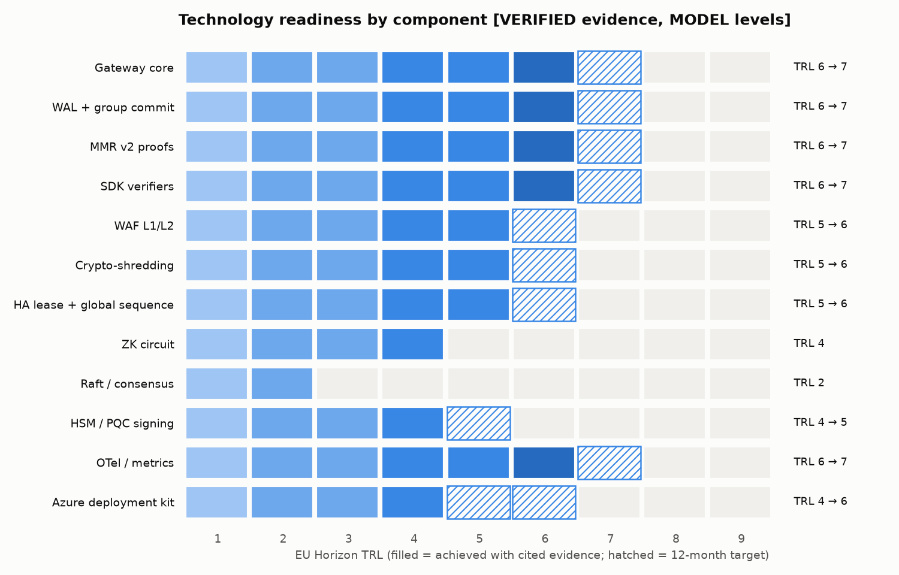
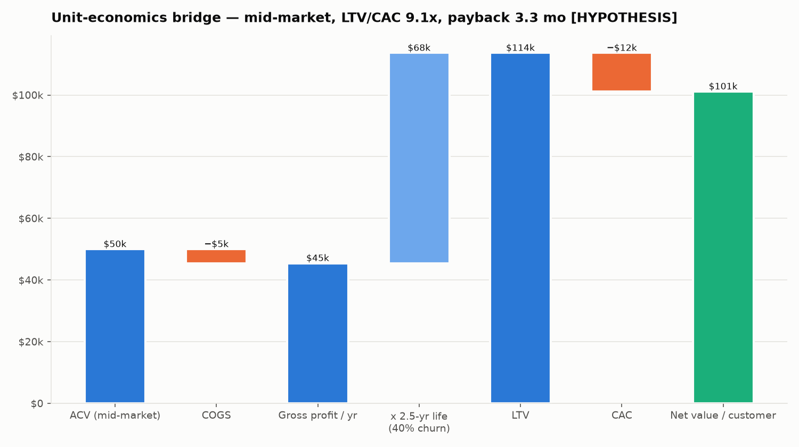
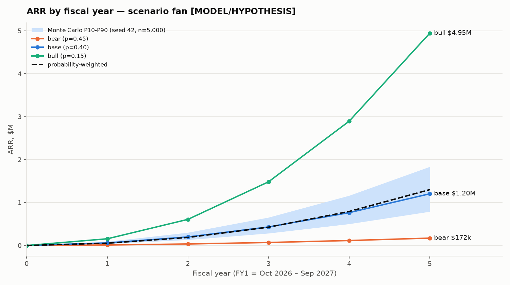
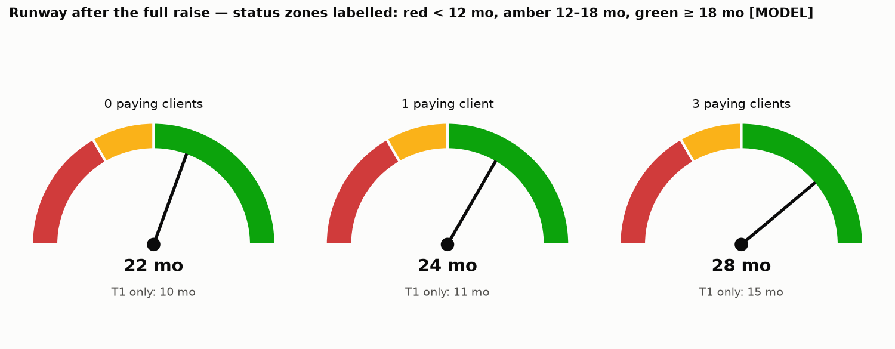
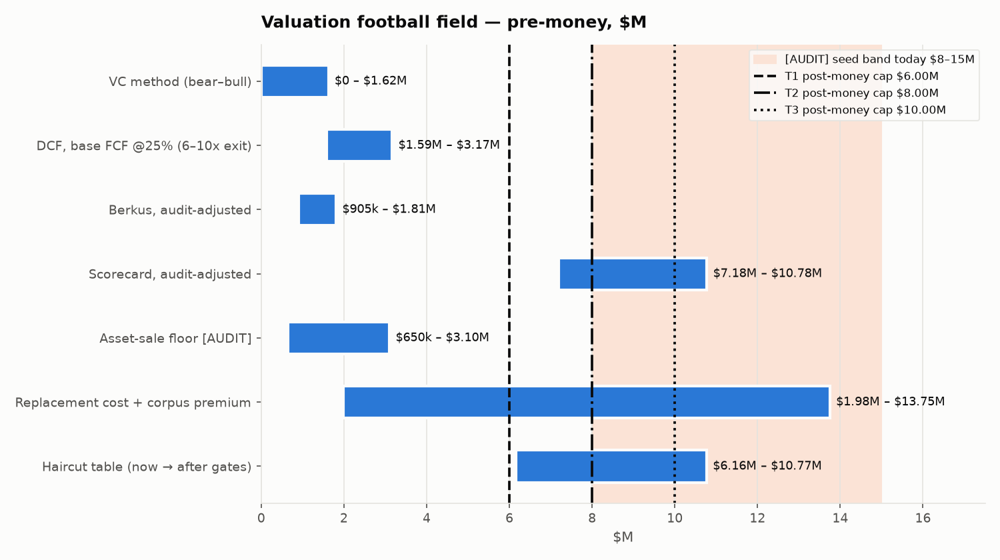
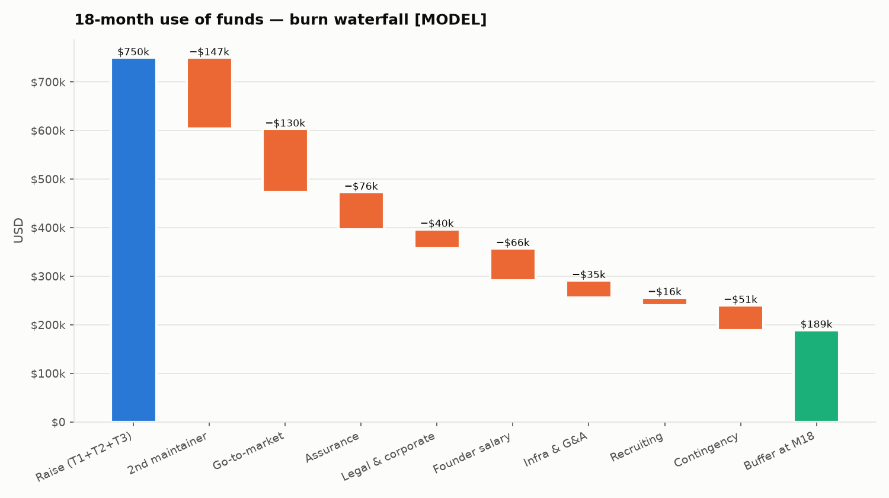

Mission Order XV · Seed data room · prepared 25 Sep 2026
Aegis Latent Core — Seed Investor Pack
A self-hosted gateway that commits signed, hash-linked evidence of every governed AI call before the response reaches the caller. This pack prices it, stress-tests it and names what would prove it wrong.
Every figure in D3–D7 and all six charts come from one script, aegis_financial_engine.py (seed 42, reproduced byte-for-byte in D8). Nine §0 inputs were corrected or downgraded when checked against the repository and primary sources; the conflict log is D10.4.
D1 Executive investment memo
Thesis. Aegis Latent Core is a self-hosted gateway that writes signed, hash-linked evidence of every governed AI call before the response reaches the caller, and issues inclusion proofs that a third party checks against a root it obtained on its own. We are raising $750kM in three milestone-gated SAFE tranches to turn a published, independently verifiable codebase into paying design partners.
Four facts to know first
- Revenue is zero and no buyer has been interviewed. Mitigation in motion: three interviews and one paid pilot form Gate 2; tranche 2 does not release without them.
- One person maintains the code. Mitigation in motion: 20%M of the raise ($147kM) pays a second maintainer from month 3M. The escrow deposit is specified in the maintainer handbook; executing it is milestone M9.
- No penetration test and no SOC 2 report exist. Mitigation in motion: a signed pen-test SOW is a Gate-2 condition; an engaged SOC 2 Type I auditor is a Gate-3 condition.
- Cash-flow methods value the company at $0–3.2MM; market methods at $6.2–10.8MM (D6). Mitigation in motion: the SAFE caps step up only as evidence arrives: $6M → $8M → $10M post-moneyM.
What exists today, read back
Version 5.0.1 was published on 24 Sep 2026V and every surface was read back: the Sigstore-signed tag, the GitHub Release (15V of 15V checksummed files re-hashed), SDKs on PyPI and npm byte-identical to the release, and container images whose signatures and build provenance verify against the publishing workflow. 7,550V tests pass. The claims register holds 112V claims with 0V findings and refuses 70V unsupported ones. The evidence commit, durable disk write included, measures p50 0.62 msV and p99 1.22 msV on a 4V-vCPU shared VM.
Frame A: the clocks are already running
The EU AI Act applies from 2 Aug 2026V·P; its prohibitions have applied since 2 Feb 2025V·P and Annex-I obligations follow on 2 Aug 2027V·P. Compliance with the SEC's Rule 17a-4(f) audit-trail alternative has been required since 3 May 2023V·P. MiFID II Art 16(7) records are kept 5 yearsV·P, 7V·P on request. A regulated firm that cannot show what a model was asked, and prove the record was not edited, takes that loss at examination, long after the purchase decision.
Honest limit Aegis is an input to these obligations and never discharges one. A firm with WORM storage and a SIEM may already satisfy 17a-4(f) without it.
Falsifier If the EU proposal to postpone high-risk obligations (status not verified in this pack) has been adopted, the EU clock moves to 2027–2028. If 3H of 3H interviewed compliance leads say their existing WORM and SIEM stack already answers examiners, Frame A is dead.
Frame B: the trust asset
Marketing in this category commonly says "tamper-proof" and "compliant". Aegis's corpus cannot: a CI gate rejects any public claim without an evidence locator, 70V claims are explicitly refused, and nothing is called published until each surface is read back. A diligence reviewer can re-run every check in an afternoon.
Honest limit Discipline can be copied; it is not a moat on its own.
Falsifier One public claim that fails its own locator under diligence ends Frame B.
Frame C: the consolidation window
Security platforms have bought AI-security startups rather than build them: Robust Intelligence → Cisco (announced Aug 2024, reported ≈$400MM); Protect AI → Palo Alto Networks (Apr 2025, reported $500–700MM); Prompt Security → SentinelOne (Aug 2025, reported ≈$250MM); Lakera → Check Point (Sep 2025, reported ≈$300MM); CalypsoAI → F5 (Sep 2025, $180MM). Dates and amounts are press-reported and were not re-verified for this pack.
Honest limit Those companies protect models and prompts, and each had a team and customers. Aegis is an evidence layer, adjacent to them rather than the same thing, and the model gives the bull case only p = 0.15M.
Falsifier If no acquirer's AI-security line adds an audit-evidence component by the end of 2027, the window thesis does not reach this category.
Frame D: commitment, in tranches
$300kM at signing; $250kM when pilot #1 is signed and the pen test is contracted; $200kM when two design partners are signed, pen-test criticals are remediated and a SOC 2 Type I auditor is engaged. An investor who stops after T1 has $300kM at risk against 10 monthsM of runway and an asset-sale floor of $0.65–3.1MM·A.
Honest limit Tranching moves financing risk onto the founder: a later tranche can fail to arrive even when its gate is met.
Falsifier Gate 2 unmet by month 8M means T2 does not release, and the plan switches to the wind-down path in D5.
What the model says
Base-case FY5 ARR is $1.20MH; probability-weighted, $1.30MM. The base case needs about $0.7MM more by mid-FY3. The bull case (p = 0.15M) turns cash-flow positive in FY3. The bear case (p = 0.45M) spends the released tranches by about month 18M and exits through the asset-sale path.
Tag census V 17 (incl. 6 V·P) · M 25 (incl. 1 M·A) · H 3
D1 Resumen para ángeles de LatAm
Qué es. Aegis Latent Core es un gateway que instalás en tu propia infraestructura. Antes de que la respuesta de un modelo de IA llegue a quien la pidió, Aegis guarda una evidencia firmada y encadenada de esa llamada. Después le puede dar a un tercero una prueba de que ese registro está incluido, sin que tenga que confiar en nosotros.
Qué pedimos. US$750kM en tres tramos de SAFE. Cada tramo se libera solo si se cumple un hito que se puede comprobar:
- Tramo 1: US$300kM al firmar. Tope de valuación US$6MM post-money.
- Tramo 2: US$250kM cuando haya un piloto pago firmado y el pentest contratado. Tope US$8MM.
- Tramo 3: US$200kM con dos clientes de diseño firmados, los hallazgos críticos del pentest corregidos y un auditor de SOC 2 Tipo I contratado. Tope US$10MM.
Lo que tenés que saber antes que nada. Todavía no hay ventas ni entrevistas con compradores. El código lo mantiene una sola persona; el 20%M de los fondos (US$147kM) paga un segundo mantenedor. No hay pentest ni informe SOC 2 todavía; están atados a los tramos 2 y 3. Los métodos basados en flujo de caja valúan la empresa entre US$0 y US$3,2MM; los de mercado, entre US$6,2M y US$10,8MM. Por eso el tope sube a medida que aparece evidencia, en vez de fijarse alto desde el primer día.
Lo que ya existe y se puede comprobar. La versión 5.0.1 se publicó el 24/09/2026V. Verificamos la firma de la etiqueta, los 15V archivos del release contra sus checksums, los SDK en PyPI y npm (idénticos byte a byte al release) y la procedencia de las imágenes de contenedor. Pasan 7.550V tests. El registro de afirmaciones tiene 112V entradas sin hallazgos y rechaza 70V afirmaciones que no se pueden respaldar.
Por qué ahora. La Ley de IA de la UE rige desde el 2/8/2026V·P, y la alternativa de audit trail de la regla 17a-4(f) de la SEC se exige desde el 3/5/2023V·P. Las empresas reguladas van a tener que mostrar qué se le pidió a un modelo y probar que ese registro no se tocó. Qué lo refutaría: que los responsables de cumplimiento que entrevistemos digan que su almacenamiento WORM y su SIEM ya les alcanzan.
Riesgo cambiario y jurisdicción. El fundador vive en Argentina. El plan crea una sociedad en Delaware, le cede la propiedad intelectual y factura en dólares (hito M1).
Escenarios a 5 años. Base: ARR de US$1,2MH en el año 5, con otra ronda de unos US$0,7MM a mitad del año 3. Pesimista (probabilidad 45%M): los fondos alcanzan unos 18 mesesM y se sale vendiendo los activos. Optimista (15%M): flujo de caja positivo desde el año 3.
Lo que NO decimos. No decimos que Aegis haga cumplir ninguna norma por vos, ni que tenga una certificación, ni que sea inviolable. Es un insumo para tu cumplimiento; no lo reemplaza.
Tag census V 7 (incl. 2 V·P) · M 15 · H 1
D2 Technology readiness (EU Horizon TRL 1–9)
TRL 4 means validated in the lab; 5, validated in a relevant environment; 6, demonstrated in a relevant environment; 7, demonstrated in an operational environment. Levels are MODEL judgements set against the mission's anchors (core 6–7, ZK 4, consensus 2–3, HSM 4); the evidence column cites retained artifacts. Three adjustments were made, each on evidence:
- Gateway core sits at 6, not 7. The shipped image runs its hardened posture in CI, but no customer environment exists yet.
- "HA lease + global sequence" is a new row at 5. v5.0.1 implements it and CI tests it against real Redis and PostgreSQL, with SIGKILL failover measured at 4.2–5.2 sV under a 5 sV lease. Raft stays orphan code at 2. This corrects §0's "no HA" without claiming production HA (D10.4).
- The Azure deployment kit moved from 3 to 4. Since §0 was written,
deploy/azure/phase0and a VM kit were committed and one deployment was measured (Standard_B2als_v2, Chile Central, 2026-09-26): strict mode started,verify.shpassed, one signed record reached the WAL. The$17.54/$44.77monthly figures from §0 remain unmeasured; the VM's own retail price, $0.0526V/hour (≈$38V/month before disk), was read back the same day.
| Component | TRL now | Evidence | Gap to TRL+1 | Eng weeks | External $ | Cost to close |
|---|---|---|---|---|---|---|
| Gateway core | 6 | 7,550 tests; shipped image smoke-tested in hardened posture (CLM-109); signed 5.0.1 release | operational pilot at a design partner | 8 | $0 | $18,400 |
| WAL + group commit | 6 | commit p50 0.62 ms / p99 1.22 ms incl. fsync; 1,482 commits/s @100 threads on 4 vCPU | 30-day soak + power-loss test on target storage | 3 | $1,000 | $7,900 |
| MMR v2 proofs | 6 | Rust/Python root agreement; portable inclusion proofs (CLM-064) | third-party verification in a pilot | 2 | $0 | $4,600 |
| SDK verifiers | 6 | PyPI/npm 5.0.1 byte-identical to Release assets; provenance verified | external auditor runs aegis-sdk verify in a pilot | 2 | $0 | $4,600 |
| WAF L1/L2 | 5 | corpus-tested normalisation; finite pattern set (UC-042) | published adversarial eval + pen test coverage | 4 | $0 | $9,200 |
| Crypto-shredding | 5 | wired into commit path; keyed digests (CLM-098) | counsel review of erasure semantics + pilot | 3 | $3,000 | $9,900 |
| HA lease + global sequence | 5 | CI vs real Redis/PostgreSQL; SIGKILL failover 4.2-5.2 s (CLM-108) | partition/failover chaos tests + pilot | 6 | $2,000 | $15,800 |
| ZK circuit | 4 | preview guard; not on the request path | proving-system audit; deferred | 12 | $40,000 | $67,600 |
| Raft / consensus | 2 | orphan module; superseded by AD-17 lease design | not on roadmap | 0 | $0 | $0 |
| HSM / PQC signing | 4 | PKCS#11 path; ML-DSA-65 sign 173 us / verify 62 us; Managed HSM excluded ($2,342/mo) | Key Vault Premium HSM-backed key integration test | 4 | $500 | $9,700 |
| OTel / metrics | 6 | /metrics verified in the shipped image by the evidence collector (REG-D86) | pilot dashboards + alert runbook exercised | 1 | $0 | $2,300 |
| Azure deployment kit | 4 | VM kit deployed and measured once (Standard_B2als_v2, Chile Central, 2026-09-26): strict mode started, verify.sh passed, one signed record committed (REG-H07) | run phase0_guardrails.sh end to end, observe a budget alert fire, repeat on a second size/region | 1 | $200 | $2,500 |
Closing every gap to the next level costs $84,900M over 34M engineering weeks, excluding the deferred ZK proving-system audit ($67,600M). The engineering week is costed at $2,300M.

Tag census V 4 · M 52 · H 0
D3 Unit-economics engine
CAC by channel. Founder-led outbound costs $6.4kM per paying customer (the §0 prior). The other channels are untested; at the assumed mix, blended CAC is $6.05kH.
The prior, rechecked. LTV $33.75kM at 40%M churn and 90%M contribution margin implies ACV $15.0kM. With CAC $6.4kM, payback recomputes to 5.7 monthsM, not the supplied 6.3M (D10.4).
Where this business lives or dies. Mid-market LTV/CAC is 9.1xH if CAC is 25%H of ACV. If CAC equals first-year ACV, as it often does in regulated enterprise sales, LTV/CAC falls to 2.25xM at 40%M churn, below the common 3xM floor. The CAC experiment in D10 matters more than the churn experiment.
MGT overage economics. "MGT" is a million governed transactions, a contract term rather than a runtime meter. Aegis-hosted marginal cost is $1.99M per MGT:
- Compute, $0.12M: a $0.192/hV 4-vCPU VM at 1,482 commits/sV, run at 30%M utilisation.
- Storage, $1.87M: 1.5 GBM kept 60 monthsM at $0.0208/GB-monthV.
Against a price of $500–1,500H, that is a 99.6–99.9%M margin. Self-hosted, the customer carries the infrastructure, and our marginal cost is support, not volume.
Burn multiple and magic number come from the base three-statement model (D4): burn multiple 5.0H in FY1 falling to 0.5H in FY5; magic-number proxy 0.76–0.95H.
| Tier | ACV | CM | CAC | LTV @25% | LTV @40% | LTV @55% | Payback (mo) | LTV/CAC @40% |
|---|---|---|---|---|---|---|---|---|
| Blended prior | 15.0k | 90.0% | 6.4k | 54.0k | 33.8k | 24.5k | 5.7 | 5.3x |
| Mid-market | 50.0k | 90.9% | 12.5k | 181.9k | 113.7k | 82.7k | 3.3 | 9.1x |
| Enterprise | 150.0k | 90.3% | 33.8k | 541.9k | 338.7k | 246.3k | 3.0 | 10.0x |
| Pilot (one-off) | 10.0k | 75.0% | 0.0k | 7.5k | 7.5k | 7.5k | 0.0 | n/a |
| Channel | CAC | Mix |
|---|---|---|
| Founder-led outbound | 6.4k | 50% |
| Open-source inbound | 2.0k | 30% |
| Partners / SIs | 9.0k | 15% |
| Events and paid | 18.0k | 5% |
| Blended | 6.0k | 100% |
| Band | Price/MGT | Marginal cost/MGT | Margin |
|---|---|---|---|
| 10-50M | $1,500 | $1.99 | 99.87% |
| 50-250M | $950 | $1.99 | 99.79% |
| 250M+ | $500 | $1.99 | 99.60% |
| Churn \ ACV | 15.0k | 25.0k | 50.0k | 75.0k | 135.0k |
|---|---|---|---|---|---|
| 25% | 8.4x (LTV 54.0k) | 14.1x (LTV 90.0k) | 14.4x (LTV 180.0k) | 14.4x (LTV 270.0k) | 14.4x (LTV 486.0k) |
| 40% | 5.3x (LTV 33.8k) | 8.8x (LTV 56.2k) | 9.0x (LTV 112.5k) | 9.0x (LTV 168.8k) | 9.0x (LTV 303.8k) |
| 55% | 3.8x (LTV 24.5k) | 6.4x (LTV 40.9k) | 6.5x (LTV 81.8k) | 6.5x (LTV 122.7k) | 6.5x (LTV 220.9k) |
| Churn | LTV/CAC |
|---|---|
| 25% | 3.60x |
| 40% | 2.25x |
| 55% | 1.64x |

Falsifier Founder hours plus expenses per closed mid-market deal above $50kH (CAC ≈ ACV) kills the 9.1xH case; pricing must rise or the segment must change.
Tag census V 3 · M 67 · H 43
D4 Five-year three-statement model
Conventions.
- FY1 runs from Oct 2026 to Sep 2027.
- New ARR takes a mid-year convention, and churn and expansion apply to the opening ARR.
- AR sits at 45M days of revenue; deferred revenue is 50%M of ARR (annual upfront billing).
- Equipment is expensed (no capex), and tax applies only once cumulative EBT turns positive.
- The minimal balance sheet (cash, AR, deferred revenue, equity) balances to 0.00 in every year of every scenario.
- A negative cash line is the unfunded gap a next round must fill.
Scenario weights. Bear 0.45M, base 0.40M, bull 0.15M. The audit score of 51/100M·A is read as P(base or better) ≈ 0.55M, and bull is capped at 0.15M because no buyer has been interviewed.
Assumptions tab
| Input | Value | Tag | Basis |
|---|---|---|---|
hsm_b1_hourly_usd | 3.2 | V | Azure Retail Prices API, 'Key Vault HSM Pool' Standard B1, eastus, meterId 74a72b91-1389-578c-b534-d4c204e6e37d, read 2026-09-25 |
hsm_b1_month_usd | 2,342.4 | V | 3.20 USD/h x 732 h (30.5-day month) = 2,342.40; excluded by design |
vm_d4s_v5_hourly_usd | 0.192 | V | Azure Retail Prices API, Standard_D4s_v5 Linux, eastus, meterId db8c0962-f3f8-5b44-99aa-f3c7c1e668c8, read 2026-09-25 |
blob_hot_lrs_gb_month_usd | 0.0208 | V | Azure Retail Prices API, Blob Hot LRS data stored, first tier, eastus, meterId 272492b3-1c92-4a5f-bee9-52a8e10ca514, read 2026-09-25 |
fx_ars_per_usd | 1,519.5 | V | BCRA API Estadisticas Cambiarias v1.0, Cotizaciones/USD, date 2026-09-24 (tipoCotizacion), read 2026-09-25; used only by the Spanish edition to show pesos in parentheses |
azure_b2als_v2_chilecentral_hourly_usd | 0.0526 | V | evidence/benchmarks/azure/azure_Standard_B2als_v2_chilecentral_2026-09-26.json (SHA-256 762016d9...); retail list price fetched via aegis_azure_kit.py estimate, 2026-09-26; VM only, excludes the attached disk |
commits_per_s_100_threads | 1,482.37 | V | evidence/benchmarks/benchmarks_5.0.1_2026-09-24.json, 4 vCPU shared VM, commit_forensic incl. MMR append + HMAC + WAL fsync |
commit_p50_ms | 0.617 | V | same artifact, n=1000 |
commit_p99_ms | 1.216 | V | same artifact, n=1000 |
tests_passed | 7,550 | V | pytest -n auto on the 5.0.1 tree, 2026-09-24: 7,550 passed, 41 skipped, 0 failed |
claims_registered | 112 | V | scripts/verify_claims.py, 2026-09-25: 0 findings |
claims_refused | 70 | V | docs/institutional/UNSUPPORTED_CLAIMS.md rows |
test_to_source_loc | 1.24 | V | 87,557 test LOC / 70,672 Python source LOC (aegis + aegis_server), 2026-09-25 |
orphan_modules_disclosed | 77 | V | scripts/import_reachability_allowlist.txt entries, of ~207 aegis modules |
azure_typical_month_usd | 17.54 | M | owner-supplied planning input; cited evidence file is absent from the repo (docs/REGISTRY_HUMAN_PACK.md) -> downgraded from VERIFIED |
azure_worst_month_usd | 44.77 | M | owner-supplied, same status |
azure_credit_usd | 200.0 | M | Founders Hub credit, owner-stated |
human_fixed_cash_month_usd | 100.0 | M | owner prior |
cac_founder_led_usd | 6,400.0 | M | prior: founder-led, per paying customer |
churn_prior | 0.4 | M | annual logo churn prior |
contribution_margin_prior | 0.9 | M | prior |
ltv_prior_usd | 33,750.0 | M | prior at 40% churn |
acv_implied_by_prior_usd | 15,000.0 | M | LTV x churn / CM = 15,000 (derived) |
payback_prior_months | 6.3 | M | prior as supplied |
support_cost_per_customer_year | 4,000.0 | M | 0.05 FTE of an 80k senior; self-hosted product |
hosting_per_customer_year | 537.24 | M | one staging/demo environment at the worst-case Azure month |
pilot_delivery_cost_share | 0.25 | M | founder/SE time + travel |
payment_fee_share | 0.03 | M | cards/wires/FX spread |
evidence_record_bytes | 1,500 | M | WAL JSONL line incl. MMR and signature |
retention_months | 60 | M | MiFID II Art 16(7) five-year horizon |
hosted_vm_utilisation | 0.3 | M | average utilisation of a hosted node |
dso_days | 45 | M | enterprise net-30/45 terms |
deferred_revenue_share_of_arr | 0.5 | M | annual upfront billing, mid-term |
tax_rate | 0.25 | M | applied only once cumulative EBT > 0 |
commission_share_of_new_acv | 0.08 | M | |
opex_contingency | 0.1 | M | |
engineering_week_usd | 2,300.0 | M | 110k loaded / 48 weeks |
scorecard_reference_usd | 10,000,000.0 | M | pre-seed post-money SAFE-cap reference (press-reported US medians); range 8-12M |
exit_arr_multiple | {"bear": 4.0, "base": 8.0, "bull": 12.0} | M | private security-software M&A range (not strategic-premium comps) |
vc_target_multiple | 10.0 | M | mission spec |
vc_stage_discount | 0.6 | M | mission spec: applied as a 0.40 retention factor |
dcf_discount_rate | 0.25 | M | mission spec |
scenario_probabilities | {"bear": 0.45, "base": 0.4, "bull": 0.15} | M | audit 51/100 ~ P(base or better)=0.55; bull capped at 0.15 with zero buyer interviews |
audit_bands | {"replacement": [1800000.0, 11000000.0], "asset_floor": [650000.0, 3100000.0], "seed_today": [8000000.0, 15000000.0], "post_conditions": [18000000.0, 2800000… | M | [AUDIT] executed independent audit, as supplied |
raise_usd | {"T1": 300000, "T2": 250000, "T3": 200000} | M | tranche-gated SAFE, sized to the 18-month plan + contingency |
post_money_caps_usd | {"T1": 6000000.0, "T2": 8000000.0, "T3": 10000000.0} | M | milestone step-up: T1 at the haircut-now value, T2 at the [AUDIT] floor, T3 above it |
pricing | {"pilot": [2500, 30000], "mid": [25000, 75000], "ent": [95000, 175000], "mgt": {"10-50M": 1500, "50-250M": 950, "250M+": 500}} | H | zero buyer interviews; validate with 3 interviews + 1 paid pilot (REG-H06) |
channel_cac_usd | {"founder_outbound": 6400, "oss_inbound": 2000, "partner_si": 9000, "events_paid": 18000} | H | founder-led is the MODEL prior; the rest untested |
channel_mix | {"founder_outbound": 0.5, "oss_inbound": 0.3, "partner_si": 0.15, "events_paid": 0.05} | H | |
scenarios | {"bear": {"pilots": [2, 4, 6, 8, 10], "pilot_price": 5000, "conv": 0.3, "acv": [20000.0, 25000.0, 30000.0, 35000.0, 40000.0], "churn": 0.55, "exp": 0.0}, "ba… | H | pilots, conversion, ACV path, churn, expansion per scenario |
Scenario levers [HYPOTHESIS]
| Lever | Bear | Base | Bull |
|---|---|---|---|
| Pilots per year FY1–FY5 | 2, 4, 6, 8, 10 | 4, 8, 12, 16, 20 | 6, 12, 18, 24, 30 |
| Average pilot price | $5,000 | $10,000 | $15,000 |
| Pilot → annual conversion | 30% | 50% | 65% |
| New-logo ACV FY1–FY5 | $20k, $25k, $30k, $35k, $40k | $30k, $40k, $50k, $60k, $70k | $40k, $60k, $80k, $100k, $120k |
| Annual logo churn | 55% | 40% | 25% |
| Net expansion on retained ARR | 0% | 10% | 20% |
| Line | FY1 | FY2 | FY3 | FY4 | FY5 |
|---|---|---|---|---|---|
| New customers | 0.6 | 1.2 | 1.8 | 2.4 | 3.0 |
| Customers (end) | 0.6 | 1.5 | 2.5 | 3.5 | 4.6 |
| ARR (end) | 12.0k | 35.4k | 69.9k | 115.5k | 172.0k |
| Revenue | 16.0k | 43.7k | 82.7k | 132.7k | 193.7k |
| Gross margin | 73% | 75% | 77% | 79% | 81% |
| OpEx | 361.1k | 449.3k | 385.4k | 409.2k | 433.7k |
| EBITDA | -349.4k | -416.6k | -321.6k | -304.0k | -276.6k |
| Net income | -349.4k | -416.6k | -321.6k | -304.0k | -276.6k |
| CFO | -345.4k | -408.4k | -309.2k | -287.4k | -255.9k |
| CFF (SAFE tranches) | 550.0k | 0.0k | 0.0k | 0.0k | 0.0k |
| Cash / (unfunded gap), close | 204.6k | -203.8k | -513.0k | -800.3k | -1.06M |
| AR | 2.0k | 5.4k | 10.2k | 16.4k | 23.9k |
| Deferred revenue | 6.0k | 17.7k | 35.0k | 57.7k | 86.0k |
| Equity (paid-in + retained) | 200.6k | -216.1k | -537.7k | -841.7k | -1.12M |
| Balance check (A−L−E) | 0.00 | 0.00 | 0.00 | 0.00 | 0.00 |
| Headcount | 3 | 3 | 2 | 2 | 2 |
| Burn multiple | 28.8 | 17.5 | 9.0 | 6.3 | 4.5 |
| Magic number (proxy) | 0.19 | 0.19 | 1.10 | 1.07 | 1.03 |
| Line | FY1 | FY2 | FY3 | FY4 | FY5 |
|---|---|---|---|---|---|
| New customers | 2.0 | 4.0 | 6.0 | 8.0 | 10.0 |
| Customers (end) | 2.0 | 5.2 | 9.1 | 13.5 | 18.1 |
| ARR (end) | 60.0k | 199.6k | 431.7k | 764.9k | 1.20M |
| Revenue | 70.0k | 210.4k | 437.7k | 762.7k | 1.19M |
| Gross margin | 76% | 80% | 83% | 85% | 87% |
| OpEx | 373.2k | 474.0k | 816.4k | 1.08M | 1.41M |
| EBITDA | -319.9k | -306.2k | -454.4k | -429.8k | -378.1k |
| Net income | -319.9k | -306.2k | -454.4k | -429.8k | -378.1k |
| CFO | -298.5k | -253.7k | -366.3k | -303.3k | -211.1k |
| CFF (SAFE tranches) | 550.0k | 200.0k | 0.0k | 0.0k | 0.0k |
| Cash / (unfunded gap), close | 251.5k | 197.8k | -168.6k | -471.9k | -683.0k |
| AR | 8.6k | 25.9k | 54.0k | 94.0k | 147.0k |
| Deferred revenue | 30.0k | 99.8k | 215.9k | 382.5k | 602.4k |
| Equity (paid-in + retained) | 230.1k | 123.9k | -330.5k | -760.3k | -1.14M |
| Balance check (A−L−E) | -0.00 | -0.00 | 0.00 | 0.00 | 0.00 |
| Headcount | 3 | 3 | 5 | 7 | 9 |
| Burn multiple | 5.0 | 1.8 | 1.6 | 0.9 | 0.5 |
| Magic number (proxy) | 0.82 | 0.95 | 0.78 | 0.82 | 0.76 |
| Line | FY1 | FY2 | FY3 | FY4 | FY5 |
|---|---|---|---|---|---|
| New customers | 3.9 | 7.8 | 11.7 | 15.6 | 19.5 |
| Customers (end) | 3.9 | 10.7 | 19.7 | 30.4 | 42.3 |
| ARR (end) | 156.0k | 608.4k | 1.48M | 2.90M | 4.95M |
| Revenue | 168.0k | 564.1k | 1.32M | 2.57M | 4.41M |
| Gross margin | 78% | 83% | 87% | 89% | 91% |
| OpEx | 391.6k | 788.2k | 1.11M | 1.49M | 1.90M |
| EBITDA | -260.0k | -319.1k | 36.5k | 798.0k | 2.09M |
| Net income | -260.0k | -319.1k | 36.5k | 598.5k | 1.57M |
| CFO | -202.7k | -141.8k | 380.4k | 1.15M | 2.37M |
| CFF (SAFE tranches) | 750.0k | 0.0k | 0.0k | 0.0k | 0.0k |
| Cash / (unfunded gap), close | 547.3k | 405.5k | 786.0k | 1.94M | 4.31M |
| AR | 20.7k | 69.6k | 163.2k | 316.6k | 543.3k |
| Deferred revenue | 78.0k | 304.2k | 741.8k | 1.45M | 2.47M |
| Equity (paid-in + retained) | 490.0k | 170.9k | 207.4k | 805.9k | 2.38M |
| Balance check (A−L−E) | 0.00 | 0.00 | 0.00 | 0.00 | 0.00 |
| Headcount | 3 | 5 | 7 | 9 | 11 |
| Burn multiple | 1.3 | 0.3 | — | — | — |
| Magic number (proxy) | 1.74 | 1.48 | 1.97 | 2.16 | 2.31 |
Outputs
| Scenario | FY5 ARR | FY5 EBITDA | Released capital runs out | Unfunded gap by FY5 | Consequence |
|---|---|---|---|---|---|
| Bear (0.45M) | $172kH | −$277kH | ≈ month 18M | $1.06MH | Wind-down path (D5) |
| Base (0.40M) | $1.20MH | −$378kH | ≈ month 30M | $683kH | Next round ≥ $0.7MM by mid-FY3 |
| Bull (0.15M) | $4.95MH | $2.09MH | never | $0H | Cash-flow positive from FY3 |
| Probability-weighted | $1.30MM |

| Percentile | FY1 | FY2 | FY3 | FY4 | FY5 |
|---|---|---|---|---|---|
| P10 | 39.7k | 132.1k | 283.9k | 502.0k | 789.6k |
| P50 | 60.8k | 202.8k | 437.2k | 774.7k | 1.22M |
| P90 | 90.3k | 301.5k | 653.4k | 1.16M | 1.83M |
The Monte Carlo band draws conversion, churn, expansion, ACV and pilot volume independently from triangular distributions around the base. Its FY5 P10–P90 of $0.79–1.83MM is narrower than the bear-to-bull span because each named scenario moves every lever to its extreme at once.
Tag census V 14 · M 63 (incl. 1 M·A) · H 307
D5 Burn and runway dashboard
Today, before funding
The Azure figures were supplied by the owner; the price file cited for them is not in the repository, so they carry MODEL tags (D10.4).
| Item | Typical | Worst |
|---|---|---|
| Azure / month | $17.54 | $44.77 |
| Credit runway (months) | 11.4 | 4.5 |
| Cash burn while credit lasts | $100 | $100 |
| Cash burn after credit | $117.54 | $144.77 |
| Managed HSM B1 (excluded) | $2,342.40 [VERIFIED] | — |
| Alert | Spend | Month @typical | Month @worst |
|---|---|---|---|
| 50% | $100 | 5.7 | 2.2 |
| 80% | $160 | 9.1 | 3.6 |
| 95% | $190 | 10.8 | 4.2 |
Kill-switch economics. A subscription budget of $200M carries alerts at 50/80/95%M and an action group that deallocates compute at 95% ($190M). At the worst-case month that switch fires in month 4.2M; at the typical month, in month 10.8M. Deallocation stops compute billing, and disks keep billing at a rate not measured here. Managed HSM B1 at $3.20/hV ($2,342/moV) would spend the entire $200M credit in 62.5 hoursM, which is why it is excluded by design.
After funding
Average monthly OpEx over the first 18 months is $33.9kM; each mid-market client contributes $3.8kH a month after COGS.
| Capital | 0 clients | 1 client | 3 clients |
|---|---|---|---|
| all tranches | 22 | 24 | 28 |
| T1 only | 10 | 11 | 15 |

Tranche-budget alerts
| Share of released capital spent | Action |
|---|---|
| 50%M | Gate review with SAFE holders: pilot pipeline, pen-test status, hiring. |
| 80%M | Hiring freeze unless the next gate is met; founder salary deferred. |
| 95%M | Wind-down: release the escrow deposit to design partners, run an asset sale (floor $0.65–3.1MM·A), return the remainder pro rata. |
Tag census V 2 · M 35 (incl. 1 M·A) · H 1
D6 Valuation football field

- VC method (10xM target, 5-yearM exit, 60%M stage discount applied as a 0.40M retention factor): bear $0M, base $0M (post-money $386kM is below the $750kM raise), bull $1.62MM; probability-weighted $0.24MM. At 10xM on a pre-revenue base case, the arithmetic does not clear the raise.
- Scorecard, audit-adjusted: factor 0.898M on an $8–12MM reference gives $7.2–10.8MM. The team scores 0.60M for bus factor 1; product scores audit 51/100 ÷ 50 = 1.02M·A.
- Berkus, audit-adjusted: $0.9–1.8MM.
- Replacement cost: the [AUDIT] $1.8–11MM·A plus a 10–25%M premium for the assurance corpus gives $2.0–13.75MM; the asset-sale floor is $0.65–3.1MM·A.
- DCF of base free cash flow at 25%M: PV of FY1–5 FCF is −$0.78MM; enterprise value is $1.6–3.2MM at 6–10xM FY5 ARR.
- Haircut table: from a $15MM·A reference, $6.2MM now and $10.8MM after the gates.
Synthesis. Cash-flow methods say $0–3.2MM; market methods say $6.2–10.8MM. The [AUDIT] band of $8–15MM·A is reached only by the scorecard's upper half, the upper range of replacement cost, and the post-gate haircut value. That is why the caps step up: T1 at $6MM (the haircut-now value), T2 at $8MM (the audit floor, once revenue exists), T3 at $10MM (near the post-gate value).
Strategic tail. A $180MM strategic exit (the smallest reported comp) at p = 0.05M adds $0.36MM to the VC-method value. The right tail is real and small in expectation.
Conditions to move to the $18–28MM·A next-round band. Two signed paid design partners; SOC 2 Type I started; the pen test done with criticals remediated; the senior hire on payroll. This pack adds ARR ≥ $200kM, because without revenue that band would sit above every method here.
| Scenario | ARR FY5 | Exit multiple | Exit EV | Post-money | Pre-money |
|---|---|---|---|---|---|
| bear | 172.0k | 4x | 687.8k | 27.5k | 0.0k |
| base | 1.20M | 8x | 9.64M | 385.6k | 0.0k |
| bull | 4.95M | 12x | 59.35M | 2.37M | 1.62M |
| Probability-weighted | 243.6k |
| Factor | Weight | Score vs average | Contribution |
|---|---|---|---|
| Team | 30% | 0.60 | 0.180 |
| Opportunity size | 25% | 1.40 | 0.350 |
| Product/technology | 15% | 1.02 | 0.153 |
| Competitive environment | 10% | 0.80 | 0.080 |
| Sales channels/partnerships | 10% | 0.40 | 0.040 |
| Need for more capital | 5% | 1.10 | 0.055 |
| Other (jurisdiction, licence) | 5% | 0.80 | 0.040 |
| Factor total | 0.898 | ||
| Pre-money (ref $8–12M) | 7.18M – 10.78M |
| Element | Score (0–1) |
|---|---|
| Sound idea | 0.70 |
| Prototype (audit 51/100) | 0.51 |
| Quality team | 0.30 |
| Strategic relationships | 0.10 |
| Product rollout/sales | 0.20 |
| Value at $0.5M / $1.0M per element | 905.0k / 1.81M |
| Exit multiple on FY5 ARR | PV(FCF FY1–5) | Enterprise value |
|---|---|---|
| 6x | -782.2k | 1.59M |
| 8x | -782.2k | 2.38M |
| 10x | -782.2k | 3.17M |
| Haircut | Now | After gates | Gate that removes it |
|---|---|---|---|
| Bus factor 1 | −20% | −8% | second maintainer hired + escrow executed |
| AGPL friction | −7% | −4% | commercial licence counsel + one executed commercial licence |
| Zero revenue | −25% | −10% | two paid design partners |
| No third-party audit | −12% | −3% | pen test report with criticals remediated |
| Single geography | −5% | −3% | one EU or US design partner |
| FX / Argentina jurisdiction | −12% | −4% | Delaware parent + USD contracts |
| Resulting value | 6.16M | 10.77M |
Falsifier If three qualified seed investors decline at a $6MM cap for price reasons alone, the market-method band is wrong for this company today, and the cap moves to the DCF range.
Tag census V 0 · M 107 (incl. 6 M·A) · H 0
D7 Use of funds and tranche gates
| Workstream | USD | Share |
|---|---|---|
| Engineering continuity (2nd maintainer, 16 mo) | 146.7k | 26% |
| Go-to-market (solutions engineer 12 mo + design-partner program) | 130.0k | 23% |
| Assurance (pen test + retest, SOC 2 Type I, escrow) | 76.5k | 14% |
| Legal & corporate (entity, IP, licence, regulatory, AI-authorship opinion) | 39.5k | 7% |
| Founder salary (18 mo) | 66.0k | 12% |
| Infra, tools, insurance, accounting (18 mo) | 35.0k | 6% |
| Recruiting | 16.0k | 3% |
| Contingency (10%) | 51.0k | 9% |
| Total 18 months | 560.6k | 100% |
| Raise | 750.0k | |
| Buffer at M18 | 189.4k |

Sensitivity. The second maintainer is modelled at $110kM a year, a LatAm remote rate below the repository's own $150–250kM US-market estimate. At $200kM, the 18-month plan rises by $120kM and the buffer shrinks to $69kM.
Tranches
| Tranche | Amount | Post-money cap | Releases when | Deadline | What the investor checks |
|---|---|---|---|---|---|
| T1 | $300kM | $6MM | At signing | — | — |
| T2 | $250kM | $8MM | Paid pilot #1 signed (≥ $2.5kH) AND pen-test SOW signed | Month 8M | Countersigned pilot order; signed SOW |
| T3 | $200kM | $10MM | Two paid design partners AND pen-test criticals remediated AND SOC 2 Type I auditor engaged | Month 14M | Two order forms; report plus retest letter; engagement letter |
Milestones (dates assume T1 closes 30 Nov 2026M)
| # | Milestone | Owner | Cost | Date | Falsifiable success criterion |
|---|---|---|---|---|---|
| M1 | Delaware parent formed; IP assigned; copyright and licence opinions | Founder + counsel | $32kM | 31 Jan 2027 | Certificate of incorporation and signed IP assignment in the data room |
| M2 | Three buyer interviews | Founder | $0M | 31 Jan 2027 | Three dated notes naming organisation type and role; ≥ 2H cite an examiner request for AI records |
| M3 | Senior security engineer (second maintainer) starts | Founder | $110k/yrM | 28 Feb 2027 | Signed offer; first reviewed change merged to main |
| M4 | Pen-test SOW signed, scoped to the evidence path | Founder | $22kM | 31 Mar 2027 | SOW names the three questions: emit without commit, forged receipt, cross-tenant read |
| M5 | Paid pilot #1 signed (Gate 2) | Founder | ≥ $2.5k revenueH | 31 May 2027 | Countersigned order and invoice paid |
| M6 | Pen-test report; criticals remediated | Maintainer | $9k retestM | 30 Jun 2027 | Report plus retest letter showing 0H open criticals |
| M7 | SOC 2 Type I auditor engaged (Gate 3) | Founder | $35kM | 31 Aug 2027 | Engagement letter with a fieldwork date |
| M8 | Design partner #2 signed (Gate 3) | Solutions engineer | — | 30 Sep 2027 | Second countersigned paid order |
| M9 | Escrow agreement executed | Founder | $7.5kM | 31 Mar 2027 | Signed agreement; first deposit verified by the escrow agent |
| M10 | First commercial licence executed | Founder | — | 30 Sep 2027 | Signed licence with a paying customer |
| M11 | SOC 2 Type I report issued | Founder + auditor | in M7 | 31 Dec 2027 | Report issued with no qualified opinion |
| M12 | ARR ≥ $200kM: the next-round trigger | Team | — | 30 Sep 2028 | Signed contracts summing ≥ $200k ARR |
Tag census V 0 · M 42 · H 4
D8 Visual asset pack
(a) Tables. Every model block appears as a table in D2–D7; the same tables are in model_tables.md.
(b) Revenue logic chain.
flowchart LR A[OSS users: GitHub, PyPI, npm] --> B[Qualified conversations] F[Founder outbound, CAC 6.4k] --> B P[Partners and SIs, CAC 9k] --> B B --> C[Paid pilot, 2.5k to 30k] C -->|conversion 30 / 50 / 65 %| D[Annual licence, ACV 25k to 175k] D --> E[Retained ARR, churn 55 / 40 / 25 %] E -->|MGT overage and upsell 0 / 10 / 20 %| G[Expansion ARR] E --> H[FY5 ARR: bear 172k, base 1.20M, bull 4.95M] G --> H
Tags for the numbers in this diagram: founder CAC $6.4kM; partner CAC $9kH; pilot $2.5–30kH; conversion 30/50/65%H; ACV $25–175kH; churn 55/40/25%H; expansion 0/10/20%H; FY5 ARR $172k / $1.20M / $4.95MH.
(b) Tranche-gate flow.
flowchart TD
S[Sign SAFE: T1 300k, cap 6M] --> W1[Months 1 to 8: hire maintainer, Delaware and IP, 3 interviews, pen-test SOW]
W1 --> G2{Gate 2 by month 8: paid pilot 1 AND pen-test SOW}
G2 -->|met| T2[T2 250k, cap 8M]
G2 -->|not met| K[Hiring freeze, then wind-down at 95 % of T1: escrow release, asset sale]
T2 --> W2[Months 9 to 14: pen test and fixes, design partner 2, SOC 2 readiness]
W2 --> G3{Gate 3 by month 14: 2 paid partners AND criticals fixed AND SOC 2 auditor engaged}
G3 -->|met| T3[T3 200k, cap 10M]
G3 -->|not met| R[Operate on T1 and T2, runway review]
T3 --> N[Next round at 18M to 28M pre, requires ARR of at least 200k]
Tags for the numbers in this diagram: tranches $300k / $250k / $200kM; caps $6M / $8M / $10MM; gate deadlines month 8 / month 14M; three interviewsH; wind-down trigger at 95%M of T1; next round $18–28MM·A; ARR condition $200kM.
(c) The engine, verbatim. Run it with python aegis_financial_engine.py --out ./out (numpy 2.x, matplotlib 3.x); --lang es renders the Spanish edition from the same numbers. It writes the six PNGs, model_tables.md and model_outputs.json. Two consecutive runs produced byte-identical PNGs and JSON.
aegis_financial_engine.py
#!/usr/bin/env python3
"""Aegis Latent Core — investor financial engine (Mission Order XV).
One deterministic script produces every number in deliverables D3-D7 and all
six charts. Nothing is typed into the memo by hand: the memo quotes
``model_outputs.json`` and ``model_tables.md``, which this script writes.
python aegis_financial_engine.py --out ./out
python aegis_financial_engine.py --out ./out_es --lang es
Determinism: seed=42 (numpy Generator), matplotlib Agg backend (headless),
no network, no wall-clock values in the outputs.
Languages: ``--lang es`` renders the charts and tables in Rioplatense Spanish,
with Argentine number format and every US-dollar amount followed by its peso
equivalent at the VERIFIED BCRA rate (``fx_ars_per_usd``). The model itself
runs in USD in both languages, so ``model_outputs.json`` is byte-identical.
Tags on every input:
VERIFIED read back from a primary source or a retained repo artifact
MODEL an assumption stated inline, derived or owner-supplied
HYPOTHESIS untested; the experiment that would validate it is stated
"""
# Copyright (c) 2026 Juan Luna. All rights reserved.
# Licensed under the GNU Affero General Public License v3 (AGPLv3) OR under a
# Proprietary Commercial License. See LICENSE and COMMERCIAL.md for terms.
from __future__ import annotations
import argparse
import json
from pathlib import Path
import matplotlib
matplotlib.use("Agg")
import matplotlib.pyplot as plt # noqa: E402
import matplotlib.ticker # noqa: E402
import numpy as np # noqa: E402
from matplotlib.patches import Rectangle, Wedge # noqa: E402
SEED = 42
YEARS = [1, 2, 3, 4, 5] # FY1 = Oct 2026 - Sep 2027
SCEN = ["bear", "base", "bull"]
# ---------------------------------------------------------------------------
# 0. Tagged inputs
# ---------------------------------------------------------------------------
INPUTS: dict[str, dict] = {}
LANG = "en" # set by --lang; changes presentation only, never a number
def inp(key: str, value, tag: str, note: str, note_es: str):
INPUTS[key] = {"value": value, "tag": tag, "note": note, "note_es": note_es}
return value
# VERIFIED -------------------------------------------------------------------
HSM_B1_HOURLY = inp(
"hsm_b1_hourly_usd",
3.20,
"VERIFIED",
"Azure Retail Prices API, 'Key Vault HSM Pool' Standard B1, eastus, "
"meterId 74a72b91-1389-578c-b534-d4c204e6e37d, read 2026-09-25",
"API Azure Retail Prices, 'Key Vault HSM Pool' Standard B1, eastus, "
"meterId 74a72b91-1389-578c-b534-d4c204e6e37d, consultada el 25/09/2026",
)
HSM_B1_MONTH = inp(
"hsm_b1_month_usd",
round(HSM_B1_HOURLY * 732, 2),
"VERIFIED",
"3.20 USD/h x 732 h (30.5-day month) = 2,342.40; excluded by design",
"3,20 USD/h x 732 h (mes de 30,5 días) = 2.342,40; excluido por diseño",
)
VM_D4_HOURLY = inp(
"vm_d4s_v5_hourly_usd",
0.192,
"VERIFIED",
"Azure Retail Prices API, Standard_D4s_v5 Linux, eastus, "
"meterId db8c0962-f3f8-5b44-99aa-f3c7c1e668c8, read 2026-09-25",
"API Azure Retail Prices, Standard_D4s_v5 Linux, eastus, "
"meterId db8c0962-f3f8-5b44-99aa-f3c7c1e668c8, consultada el 25/09/2026",
)
BLOB_GB_MONTH = inp(
"blob_hot_lrs_gb_month_usd",
0.0208,
"VERIFIED",
"Azure Retail Prices API, Blob Hot LRS data stored, first tier, eastus, "
"meterId 272492b3-1c92-4a5f-bee9-52a8e10ca514, read 2026-09-25",
"API Azure Retail Prices, Blob Hot LRS, datos almacenados, primer tramo, eastus, "
"meterId 272492b3-1c92-4a5f-bee9-52a8e10ca514, consultada el 25/09/2026",
)
FX_ARS = inp(
"fx_ars_per_usd",
1519.50,
"VERIFIED",
"BCRA API Estadisticas Cambiarias v1.0, Cotizaciones/USD, date 2026-09-24 (tipoCotizacion), "
"read 2026-09-25; used only by the Spanish edition to show pesos in parentheses",
"API del BCRA Estadísticas Cambiarias v1.0, Cotizaciones/USD, fecha 24/09/2026 (tipoCotizacion), "
"consultada el 25/09/2026; solo la usa la edición en castellano para mostrar pesos entre paréntesis",
)
AZURE_VM_HOURLY = inp(
"azure_b2als_v2_chilecentral_hourly_usd",
0.0526,
"VERIFIED",
"evidence/benchmarks/azure/azure_Standard_B2als_v2_chilecentral_2026-09-26.json "
"(SHA-256 762016d9...); retail list price fetched via aegis_azure_kit.py estimate, "
"2026-09-26; VM only, excludes the attached disk",
"evidence/benchmarks/azure/azure_Standard_B2als_v2_chilecentral_2026-09-26.json "
"(SHA-256 762016d9...); precio de lista obtenido con aegis_azure_kit.py estimate, "
"26/09/2026; solo la VM, sin el disco adjunto",
)
THROUGHPUT_100T = inp(
"commits_per_s_100_threads",
1482.37,
"VERIFIED",
"evidence/benchmarks/benchmarks_5.0.1_2026-09-24.json, 4 vCPU shared VM, "
"commit_forensic incl. MMR append + HMAC + WAL fsync",
"evidence/benchmarks/benchmarks_5.0.1_2026-09-24.json, VM compartida de 4 vCPU, "
"commit_forensic con append al MMR + HMAC + fsync del WAL",
)
COMMIT_P50_MS = inp(
"commit_p50_ms", 0.617, "VERIFIED", "same artifact, n=1000", "mismo artefacto, n=1000"
)
COMMIT_P99_MS = inp(
"commit_p99_ms", 1.216, "VERIFIED", "same artifact, n=1000", "mismo artefacto, n=1000"
)
TESTS_PASSED = inp(
"tests_passed",
7550,
"VERIFIED",
"pytest -n auto on the 5.0.1 tree, 2026-09-24: 7,550 passed, 41 skipped, 0 failed",
"pytest -n auto sobre el árbol 5.0.1, 24/09/2026: 7.550 aprobadas, 41 omitidas, 0 fallidas",
)
CLAIMS = inp(
"claims_registered",
112,
"VERIFIED",
"scripts/verify_claims.py, 2026-09-25: 0 findings",
"scripts/verify_claims.py, 25/09/2026: 0 hallazgos",
)
UNSUPPORTED = inp(
"claims_refused",
70,
"VERIFIED",
"docs/institutional/UNSUPPORTED_CLAIMS.md rows",
"filas de docs/institutional/UNSUPPORTED_CLAIMS.md",
)
TEST_SRC = inp(
"test_to_source_loc",
1.24,
"VERIFIED",
"87,557 test LOC / 70,672 Python source LOC (aegis + aegis_server), 2026-09-25",
"87.557 líneas de prueba / 70.672 líneas de código Python (aegis + aegis_server), 25/09/2026",
)
ORPHANS = inp(
"orphan_modules_disclosed",
77,
"VERIFIED",
"scripts/import_reachability_allowlist.txt entries, of ~207 aegis modules",
"entradas de scripts/import_reachability_allowlist.txt, sobre ~207 módulos de aegis",
)
# MODEL ----------------------------------------------------------------------
AZ_TYPICAL = inp(
"azure_typical_month_usd",
17.54,
"MODEL",
"owner-supplied planning input; cited evidence file is absent from the repo "
"(docs/REGISTRY_HUMAN_PACK.md) -> downgraded from VERIFIED",
"dato de planificación del fundador; el archivo de evidencia citado no está en el repositorio "
"(docs/REGISTRY_HUMAN_PACK.md) -> baja de VERIFIED a MODEL",
)
AZ_WORST = inp(
"azure_worst_month_usd",
44.77,
"MODEL",
"owner-supplied, same status",
"dato del fundador, mismo estado",
)
CREDIT = inp(
"azure_credit_usd",
200.0,
"MODEL",
"Founders Hub credit, owner-stated",
"crédito de Founders Hub, según el fundador",
)
HUMAN_FIXED = inp(
"human_fixed_cash_month_usd", 100.0, "MODEL", "owner prior", "supuesto previo del fundador"
)
CAC_FOUNDER = inp(
"cac_founder_led_usd",
6400.0,
"MODEL",
"prior: founder-led, per paying customer",
"supuesto previo: venta liderada por el fundador, por cliente que paga",
)
CHURN_PRIOR = inp(
"churn_prior",
0.40,
"MODEL",
"annual logo churn prior",
"supuesto previo de churn anual de clientes",
)
CM_PRIOR = inp("contribution_margin_prior", 0.90, "MODEL", "prior", "supuesto previo")
LTV_PRIOR = inp(
"ltv_prior_usd", 33750.0, "MODEL", "prior at 40% churn", "supuesto previo con churn del 40%"
)
ACV_IMPLIED = inp(
"acv_implied_by_prior_usd",
LTV_PRIOR * CHURN_PRIOR / CM_PRIOR,
"MODEL",
"LTV x churn / CM = 15,000 (derived)",
"LTV x churn / MC = 15.000 (derivado)",
)
PAYBACK_PRIOR = inp(
"payback_prior_months", 6.3, "MODEL", "prior as supplied", "supuesto previo tal como se recibió"
)
SUPPORT_PER_CUST = inp(
"support_cost_per_customer_year",
4000.0,
"MODEL",
"0.05 FTE of an 80k senior; self-hosted product",
"0,05 FTE de un senior de 80 mil; producto autoalojado",
)
HOSTING_PER_CUST = inp(
"hosting_per_customer_year",
round(AZ_WORST * 12, 2),
"MODEL",
"one staging/demo environment at the worst-case Azure month",
"un entorno de staging/demo al costo mensual de Azure del peor caso",
)
PILOT_DELIVERY = inp(
"pilot_delivery_cost_share",
0.25,
"MODEL",
"founder/SE time + travel",
"tiempo del fundador/ingeniero de soluciones + viajes",
)
PAYMENT_FEES = inp(
"payment_fee_share",
0.03,
"MODEL",
"cards/wires/FX spread",
"tarjetas/transferencias/diferencial cambiario",
)
RECORD_BYTES = inp(
"evidence_record_bytes",
1500,
"MODEL",
"WAL JSONL line incl. MMR and signature",
"línea JSONL del WAL con MMR y firma",
)
RETENTION_MONTHS = inp(
"retention_months",
60,
"MODEL",
"MiFID II Art 16(7) five-year horizon",
"horizonte de cinco años de MiFID II art. 16(7)",
)
HOSTED_UTIL = inp(
"hosted_vm_utilisation",
0.30,
"MODEL",
"average utilisation of a hosted node",
"utilización promedio de un nodo alojado",
)
DSO_DAYS = inp(
"dso_days", 45, "MODEL", "enterprise net-30/45 terms", "plazos empresariales de 30/45 días"
)
DEFERRED_SHARE = inp(
"deferred_revenue_share_of_arr",
0.50,
"MODEL",
"annual upfront billing, mid-term",
"facturación anual por adelantado, a mitad de período",
)
TAX_RATE = inp(
"tax_rate",
0.25,
"MODEL",
"applied only once cumulative EBT > 0",
"se aplica solo cuando el resultado antes de impuestos acumulado es > 0",
)
COMMISSION = inp("commission_share_of_new_acv", 0.08, "MODEL", "", "")
CONTINGENCY = inp("opex_contingency", 0.10, "MODEL", "", "")
ENG_WEEK = inp(
"engineering_week_usd",
2300.0,
"MODEL",
"110k loaded / 48 weeks",
"110 mil con cargas / 48 semanas",
)
SCORECARD_REF = inp(
"scorecard_reference_usd",
10.0e6,
"MODEL",
"pre-seed post-money SAFE-cap reference (press-reported US medians); range 8-12M",
"referencia de tope post-money de SAFE pre-semilla (medianas de EE. UU. informadas por la prensa); rango 8-12 M",
)
EXIT_MULT = inp(
"exit_arr_multiple",
{"bear": 4.0, "base": 8.0, "bull": 12.0},
"MODEL",
"private security-software M&A range (not strategic-premium comps)",
"rango de M&A privado de software de seguridad (sin comparables con prima estratégica)",
)
VC_TARGET = inp("vc_target_multiple", 10.0, "MODEL", "mission spec", "especificación de la misión")
VC_STAGE = inp(
"vc_stage_discount",
0.60,
"MODEL",
"mission spec: applied as a 0.40 retention factor",
"especificación de la misión: se aplica como factor de retención de 0,40",
)
DCF_RATE = inp("dcf_discount_rate", 0.25, "MODEL", "mission spec", "especificación de la misión")
SCEN_P = inp(
"scenario_probabilities",
{"bear": 0.45, "base": 0.40, "bull": 0.15},
"MODEL",
"audit 51/100 ~ P(base or better)=0.55; bull capped at 0.15 with zero buyer interviews",
"auditoría 51/100 ~ P(base o mejor)=0,55; el optimista se limita a 0,15 sin entrevistas con compradores",
)
AUDIT = inp(
"audit_bands",
{
"replacement": (1.8e6, 11.0e6),
"asset_floor": (0.65e6, 3.1e6),
"seed_today": (8.0e6, 15.0e6),
"post_conditions": (18.0e6, 28.0e6),
"series_a": (30.0e6, 60.0e6),
"score": 51,
},
"MODEL",
"[AUDIT] executed independent audit, as supplied",
"[AUDIT] auditoría independiente realizada, tal como se recibió",
)
RAISE = inp(
"raise_usd",
{"T1": 300_000, "T2": 250_000, "T3": 200_000},
"MODEL",
"tranche-gated SAFE, sized to the 18-month plan + contingency",
"SAFE por tramos atados a hitos, dimensionado al plan de 18 meses + contingencia",
)
CAPS = inp(
"post_money_caps_usd",
{"T1": 6.0e6, "T2": 8.0e6, "T3": 10.0e6},
"MODEL",
"milestone step-up: T1 at the haircut-now value, T2 at the [AUDIT] floor, T3 above it",
"escalonado por hitos: T1 al valor con descuentos de hoy, T2 en el piso [AUDIT], T3 por encima",
)
# HYPOTHESIS -------------------------------------------------------------------
PRICING = inp(
"pricing",
{
"pilot": (2500, 30000),
"mid": (25000, 75000),
"ent": (95000, 175000),
"mgt": {"10-50M": 1500, "50-250M": 950, "250M+": 500},
},
"HYPOTHESIS",
"zero buyer interviews; validate with 3 interviews + 1 paid pilot (REG-H06)",
"cero entrevistas con compradores; se valida con 3 entrevistas + 1 piloto pago (REG-H06)",
)
CHANNEL_CAC = inp(
"channel_cac_usd",
{"founder_outbound": 6400, "oss_inbound": 2000, "partner_si": 9000, "events_paid": 18000},
"HYPOTHESIS",
"founder-led is the MODEL prior; the rest untested",
"la venta del fundador es el supuesto previo MODEL; el resto no se probó",
)
CHANNEL_MIX = inp(
"channel_mix",
{"founder_outbound": 0.50, "oss_inbound": 0.30, "partner_si": 0.15, "events_paid": 0.05},
"HYPOTHESIS",
"",
"",
)
SCN = inp(
"scenarios",
{
"bear": {
"pilots": [2, 4, 6, 8, 10],
"pilot_price": 5000,
"conv": 0.30,
"acv": [20e3, 25e3, 30e3, 35e3, 40e3],
"churn": 0.55,
"exp": 0.00,
},
"base": {
"pilots": [4, 8, 12, 16, 20],
"pilot_price": 10000,
"conv": 0.50,
"acv": [30e3, 40e3, 50e3, 60e3, 70e3],
"churn": 0.40,
"exp": 0.10,
},
"bull": {
"pilots": [6, 12, 18, 24, 30],
"pilot_price": 15000,
"conv": 0.65,
"acv": [40e3, 60e3, 80e3, 100e3, 120e3],
"churn": 0.25,
"exp": 0.20,
},
},
"HYPOTHESIS",
"pilots, conversion, ACV path, churn, expansion per scenario",
"pilotos, conversión, trayectoria del ACV, churn y expansión por escenario",
)
# ---------------------------------------------------------------------------
# 0b. Presentation language (numbers are identical in both languages)
# ---------------------------------------------------------------------------
SCN_ES = {"bear": "pesimista", "base": "base", "bull": "optimista"}
def _swap(s: str) -> str:
"""English digit grouping to Argentine: '1,234.5' -> '1.234,5'."""
return s.translate(str.maketrans({",": ".", ".": ","}))
def nfmt(v: float, spec: str) -> str:
"""A number in the active language's format."""
s = format(v, spec)
return _swap(s) if LANG == "es" else s
def _ars_parts(x: float, ref: float) -> tuple[str, str]:
a = abs(ref)
if a >= 1e8:
return f"{x / 1e6:,.0f}", " M"
if a >= 1e6:
return f"{x / 1e6:,.1f}", " M"
if a >= 1e3:
return f"{x:,.0f}", ""
return f"{x:,.2f}", ""
def ars_num(x: float) -> str:
"""A non-negative peso amount, Argentine format ('M' = millones)."""
n, u = _ars_parts(x, x)
return _swap(n) + u
def ars_rng(lo_usd: float, hi_usd: float) -> str:
"""Peso range for a dollar range, one unit for both ends."""
lo, hi = lo_usd * FX_ARS, hi_usd * FX_ARS
n1, _ = _ars_parts(lo, hi)
n2, u = _ars_parts(hi, hi)
return f"{_swap(n1)}–{_swap(n2)}{u}"
def dol(v: float, spec: str = ",.2f") -> str:
"""Plain-dollar table cell: EN '$1,500'; ES 'US$ 1.500 (ARS 2,3 M)'."""
if LANG == "en":
return "$" + format(v, spec)
sign = "−" if v < 0 else ""
return f"{sign}US$ {nfmt(abs(v), spec)} ({sign}ARS {ars_num(abs(v) * FX_ARS)})"
ES = {
# charts
"Monte Carlo P10-P90 (seed 42, n=5,000)": "Monte Carlo P10-P90 (semilla 42, n=5.000)",
"probability-weighted": "ponderado por probabilidad",
"ARR by fiscal year — scenario fan [MODEL/HYPOTHESIS]": "ARR por año fiscal — abanico de escenarios [MODEL/HYPOTHESIS]",
"Fiscal year (FY1 = Oct 2026 – Sep 2027)": "Año fiscal (AF1 = oct 2026 – sep 2027)",
"ARR, $M": "ARR, millones de US\\$",
"2nd maintainer": "2.º mantenedor",
"Go-to-market": "Salida al mercado",
"Assurance": "Aseguramiento",
"Legal & corporate": "Legal y societario",
"Founder salary": "Sueldo del fundador",
"Infra & G&A": "Infra y G&A",
"Recruiting": "Reclutamiento",
"Contingency": "Contingencia",
"Raise (T1+T2+T3)": "Ronda (T1+T2+T3)",
"Buffer at M18": "Colchón al mes 18",
"18-month use of funds — burn waterfall [MODEL]": "Uso de fondos a 18 meses — cascada de consumo [MODEL]",
"USD": "US\\$",
"ACV (mid-market)": "ACV\n(mercado medio)",
"COGS": "COGS",
"Gross profit / yr": "Ganancia\nbruta por año",
"x 2.5-yr life\n(40% churn)": "x 2,5 años de vida\n(churn 40%)",
"LTV": "LTV",
"CAC": "CAC",
"Net value / customer": "Valor neto\npor cliente",
"EU Horizon TRL (filled = achieved with cited evidence; hatched = 12-month target)": "TRL de EU Horizon (lleno = alcanzado con evidencia citada; rayado = meta a 12 meses)",
"Technology readiness by component [VERIFIED evidence, MODEL levels]": "Madurez tecnológica por componente [evidencia VERIFIED, niveles MODEL]",
"VC method (bear–bull)": "Método VC (pesimista–optimista)",
"DCF, base FCF @25% (6–10x exit)": "DCF, FCF base al 25% (salida 6–10x)",
"Berkus, audit-adjusted": "Berkus, ajustado por auditoría",
"Scorecard, audit-adjusted": "Scorecard, ajustado por auditoría",
"Asset-sale floor [AUDIT]": "Piso de venta de activos [AUDIT]",
"Replacement cost + corpus premium": "Costo de reposición + prima del corpus",
"Haircut table (now → after gates)": "Tabla de descuentos (hoy → tras los hitos)",
"Valuation football field — pre-money, $M": "Football field de valuación — pre-money, millones de US\\$",
"$M": "millones de US\\$",
"fx_note": "ARS entre paréntesis = US\\$ × 1.519,50 (cotización del BCRA, 24/09/2026) [VERIFIED]; "
"no proyecta inflación ni devaluación.",
# tables
"Tier": "Nivel",
"CM": "MC",
"Payback (mo)": "Payback (meses)",
"Blended prior": "Base combinada (supuesto previo §0)",
"Mid-market": "Mercado medio",
"Enterprise": "Gran empresa",
"Pilot (one-off)": "Piloto (único)",
"n/a": "n/d",
"Channel": "Canal",
"Mix": "Mezcla",
"Blended": "Combinado",
"Churn": "Churn",
"Band": "Banda",
"Price/MGT": "Precio/MGT",
"Marginal cost/MGT": "Costo marginal/MGT",
"Margin": "Margen",
"Churn \\ ACV": "Churn \\ ACV",
"Line": "Línea",
"New customers": "Clientes nuevos",
"Customers (end)": "Clientes (cierre)",
"ARR (end)": "ARR (cierre)",
"Revenue": "Ingresos",
"Gross margin": "Margen bruto",
"OpEx": "OpEx",
"EBITDA": "EBITDA",
"Net income": "Resultado neto",
"CFO": "Flujo operativo (CFO)",
"CFF (SAFE tranches)": "Flujo de financiación (tramos SAFE)",
"Cash / (unfunded gap), close": "Caja / (brecha sin financiar), cierre",
"AR": "Cuentas por cobrar",
"Deferred revenue": "Ingresos diferidos",
"Equity (paid-in + retained)": "Patrimonio (aportes + resultados)",
"Balance check (A−L−E)": "Control de balance (A−P−PN)",
"Headcount": "Dotación",
"Burn multiple": "Burn multiple",
"Magic number (proxy)": "Magic number (proxy)",
"Item": "Ítem",
"Typical": "Típico",
"Worst": "Peor caso",
"Azure / month": "Azure / mes",
"Credit runway (months)": "Autonomía del crédito (meses)",
"Cash burn while credit lasts": "Consumo de caja mientras dura el crédito",
"Cash burn after credit": "Consumo de caja después del crédito",
"Managed HSM B1 (excluded)": "Managed HSM B1 (excluido)",
"Alert": "Alerta",
"Spend": "Gasto",
"Month @typical": "Mes @típico",
"Month @worst": "Mes @peor caso",
"Capital": "Capital",
"0 clients": "0 clientes",
"1 client": "1 cliente",
"3 clients": "3 clientes",
"all tranches": "todos los tramos",
"T1 only": "solo T1",
"Workstream": "Frente de trabajo",
"Share": "Participación",
"Engineering continuity (2nd maintainer, 16 mo)": "Continuidad de ingeniería (2.º mantenedor, 16 meses)",
"Go-to-market (solutions engineer 12 mo + design-partner program)": "Salida al mercado (ingeniero de soluciones 12 meses + programa de clientes de diseño)",
"Assurance (pen test + retest, SOC 2 Type I, escrow)": "Aseguramiento (pentest + retest, SOC 2 Tipo I, escrow)",
"Legal & corporate (entity, IP, licence, regulatory, AI-authorship opinion)": "Legal y societario (sociedad, PI, licencia, regulatorio, dictamen de autoría con IA)",
"Founder salary (18 mo)": "Sueldo del fundador (18 meses)",
"Infra, tools, insurance, accounting (18 mo)": "Infraestructura, herramientas, seguros, contabilidad (18 meses)",
"Contingency (10%)": "Contingencia (10%)",
"Total 18 months": "Total 18 meses",
"Raise": "Ronda",
"Scenario": "Escenario",
"ARR FY5": "ARR AF5",
"Exit multiple": "Múltiplo de salida",
"Exit EV": "EV de salida",
"Post-money": "Post-money",
"Pre-money": "Pre-money",
"Probability-weighted": "Ponderado por probabilidad",
"Factor": "Factor",
"Weight": "Peso",
"Score vs average": "Puntaje vs. promedio",
"Contribution": "Contribución",
"Team": "Equipo",
"Opportunity size": "Tamaño de la oportunidad",
"Product/technology": "Producto/tecnología",
"Competitive environment": "Entorno competitivo",
"Sales channels/partnerships": "Canales de venta/alianzas",
"Need for more capital": "Necesidad de más capital",
"Other (jurisdiction, licence)": "Otros (jurisdicción, licencia)",
"Factor total": "Factor total",
"Element": "Elemento",
"Score (0–1)": "Puntaje (0–1)",
"Sound idea": "Idea sólida",
"Prototype (audit 51/100)": "Prototipo (auditoría 51/100)",
"Quality team": "Calidad del equipo",
"Strategic relationships": "Relaciones estratégicas",
"Product rollout/sales": "Lanzamiento/ventas",
"Exit multiple on FY5 ARR": "Múltiplo de salida sobre ARR AF5",
"PV(FCF FY1–5)": "VP(FCF AF1–5)",
"Enterprise value": "Valor de empresa",
"Haircut": "Descuento",
"Now": "Hoy",
"After gates": "Tras los hitos",
"Gate that removes it": "Hito que lo elimina",
"Bus factor 1": "Bus factor 1",
"AGPL friction": "Fricción por AGPL",
"Zero revenue": "Cero ingresos",
"No third-party audit": "Sin auditoría de terceros",
"Single geography": "Una sola geografía",
"FX / Argentina jurisdiction": "Cambio / jurisdicción Argentina",
"second maintainer hired + escrow executed": "segundo mantenedor contratado + escrow firmado",
"commercial licence counsel + one executed commercial licence": "abogado de licencias + una licencia comercial firmada",
"two paid design partners": "dos clientes de diseño pagos",
"pen test report with criticals remediated": "informe de pentest con los críticos corregidos",
"one EU or US design partner": "un cliente de diseño en la UE o EE. UU.",
"Delaware parent + USD contracts": "sociedad controlante en Delaware + contratos en dólares",
"Resulting value": "Valor resultante",
"Component": "Componente",
"TRL now": "TRL hoy",
"Evidence": "Evidencia",
"Gap to TRL+1": "Brecha a TRL+1",
"Eng weeks": "Semanas de ingeniería",
"External $": "Externo",
"Cost to close": "Costo de cierre",
"Percentile": "Percentil",
}
def tr(s: str) -> str:
"""Strict: in Spanish a missing string is an error, never a silent English leak."""
return ES[s] if LANG == "es" else s
# ---------------------------------------------------------------------------
# 1. Unit economics (D3)
# ---------------------------------------------------------------------------
def ltv(acv: float, cm: float, churn: float) -> float:
return acv * cm / churn
def unit_economics() -> dict:
tiers = {
"Blended prior": {
"acv": ACV_IMPLIED,
"cogs": ACV_IMPLIED * (1 - CM_PRIOR),
"cac": CAC_FOUNDER,
},
"Mid-market": {
"acv": 50_000.0,
"cogs": SUPPORT_PER_CUST + HOSTING_PER_CUST,
"cac": 12_500.0,
},
"Enterprise": {
"acv": 135_000.0 + 15_000.0, # 10 MGT above the included 10M at $1,500
"cogs": 12_000.0 + HOSTING_PER_CUST + 2_000.0,
"cac": 33_750.0,
},
"Pilot (one-off)": {"acv": 10_000.0, "cogs": 10_000.0 * PILOT_DELIVERY, "cac": 0.0},
}
out = {}
for name, t in tiers.items():
cm = 1 - t["cogs"] / t["acv"]
row = {"acv": t["acv"], "cm": cm, "cac": t["cac"]}
for c in (0.25, 0.40, 0.55):
row[f"ltv_{int(c * 100)}"] = (
ltv(t["acv"], cm, c) if name != "Pilot (one-off)" else t["acv"] * cm
)
row["payback_months"] = (t["cac"] / (t["acv"] * cm / 12)) if t["cac"] else 0.0
row["ltv_cac_40"] = row["ltv_40"] / t["cac"] if t["cac"] else None
out[name] = row
blended_cac = sum(CHANNEL_CAC[k] * CHANNEL_MIX[k] for k in CHANNEL_CAC)
# MGT overage economics, Aegis-hosted marginal cost per million governed transactions
secs = 1e6 / THROUGHPUT_100T
compute = secs / 3600 * VM_D4_HOURLY / HOSTED_UTIL
storage = 1e6 * RECORD_BYTES / 1e9 * BLOB_GB_MONTH * RETENTION_MONTHS
mgt_cost = compute + storage
mgt = {
band: {"price": p, "marginal_cost_hosted": mgt_cost, "margin": 1 - mgt_cost / p}
for band, p in PRICING["mgt"].items()
}
# sensitivity grid churn x ACV, CAC = max(founder prior, 25% of ACV)
grid = {}
for c in (0.25, 0.40, 0.55):
grid[c] = {}
for a in (15e3, 25e3, 50e3, 75e3, 135e3):
cac = max(CAC_FOUNDER, 0.25 * a)
lv = ltv(a, CM_PRIOR, c)
grid[c][a] = {"ltv": lv, "ltv_cac": lv / cac, "cac": cac}
payback_recomputed = CAC_FOUNDER / (ACV_IMPLIED * CM_PRIOR / 12)
# stress: enterprise-style CAC equal to first-year ACV
stress = {c: ltv(1.0, CM_PRIOR, c) / 1.0 for c in (0.25, 0.40, 0.55)}
return {
"tiers": out,
"blended_cac": blended_cac,
"mgt": mgt,
"mgt_compute": compute,
"mgt_storage": storage,
"grid": grid,
"payback_recomputed": payback_recomputed,
"cac_stress_ltv_cac": stress,
}
# ---------------------------------------------------------------------------
# 2. Five-year three-statement model (D4)
# ---------------------------------------------------------------------------
HIRES = { # role: (annual loaded cost, {scenario: (start_year, fraction_of_start_year)})
"Founder": (None, None),
"Senior security engineer (2nd maintainer)": (
110_000,
{"bear": (1, 10 / 12), "base": (1, 10 / 12), "bull": (1, 10 / 12)},
),
"Solutions engineer": (
100_000,
{"bear": (1, 6 / 12), "base": (1, 6 / 12), "bull": (1, 6 / 12)},
),
"Engineer #2": (110_000, {"base": (3, 1.0), "bull": (2, 1.0)}),
"Account executive #1": (120_000, {"base": (3, 1.0), "bull": (2, 1.0)}),
"Customer success": (70_000, {"base": (4, 1.0), "bull": (3, 1.0)}),
"Engineer #3": (115_000, {"base": (4, 1.0), "bull": (3, 1.0)}),
"Account executive #2": (125_000, {"base": (5, 1.0), "bull": (4, 1.0)}),
"Engineer #4": (115_000, {"base": (5, 1.0), "bull": (4, 1.0)}),
"Engineer #5": (120_000, {"bull": (5, 1.0)}),
"Account executive #3": (130_000, {"bull": (5, 1.0)}),
}
FOUNDER_PAY = [36_000, 60_000, 90_000, 95_000, 100_000]
BEAR_SE_END_YEAR = 2 # bear cuts the solutions engineer after FY2
SALES_ROLES = {
"Solutions engineer",
"Account executive #1",
"Account executive #2",
"Account executive #3",
"Customer success",
}
def headcount_cost(s: str, y: int, sales_only: bool = False) -> tuple[float, int]:
cost = 0.0 if sales_only else FOUNDER_PAY[y - 1]
heads = 0 if sales_only else 1
for role, (annual, plan) in HIRES.items():
if annual is None or s not in plan or (sales_only and role not in SALES_ROLES):
continue
start, frac = plan[s]
if role == "Solutions engineer" and s == "bear" and y > BEAR_SE_END_YEAR:
continue
if y < start:
continue
raise_factor = 1.04 ** (y - start)
cost += annual * raise_factor * (frac if y == start else 1.0)
heads += 1
return cost, heads
def opex_lines(s: str, y: int, new_acv: float, new_hires: int) -> dict:
hc, heads = headcount_cost(s, y)
travel_scale = {"bear": 0.6, "base": 1.0, "bull": 1.5}[s]
lines = {
"Headcount": hc,
"Commissions": COMMISSION * new_acv,
"Penetration testing": 22_000 if y == 1 else 18_000, # REG-H01 15-25k
"SOC 2 (Type I Y1, Type II after)": 35_000 if y == 1 else 50_000, # REG-H02 20-80k/yr
"Escrow": 7_500 + 3_000 if y == 1 else 3_000, # REG-H03 5-10k setup
"Legal & corporate": 32_000 if y == 1 else 15_000, # entity/IP/licence/regulatory counsel
"Insurance (cyber/E&O)": 6_000,
"Accounting & tax (AR + US)": 9_000,
"Tools & SaaS": 4_800,
"Cloud (company)": (AZ_WORST * 12 + 250 * 12) * (1.10 ** (y - 1)),
"Travel & design-partner program": travel_scale
* [18_000, 30_000, 45_000, 60_000, 75_000][y - 1],
"Recruiting": 8_000 * new_hires,
}
lines["Contingency"] = CONTINGENCY * sum(lines.values())
return lines, heads
def three_statement(s: str) -> dict:
p = SCN[s]
arr_prev = cust_prev = 0.0
heads_prev = 1
cash = 0.0
cum_ebt = 0.0
paid_in = 0.0
ar_prev = def_prev = 0.0
tranche_by_year = {
"bear": [RAISE["T1"] + RAISE["T2"], 0, 0, 0, 0],
"base": [RAISE["T1"] + RAISE["T2"], RAISE["T3"], 0, 0, 0],
"bull": [RAISE["T1"] + RAISE["T2"] + RAISE["T3"], 0, 0, 0, 0],
}[s]
rows = []
min_cash, min_cash_year = 0.0, 0
for y in YEARS:
i = y - 1
new_cust = p["pilots"][i] * p["conv"]
new_acv = new_cust * p["acv"][i]
arr = arr_prev * (1 - p["churn"]) * (1 + p["exp"]) + new_acv
cust = cust_prev * (1 - p["churn"]) + new_cust
rec_rev = arr_prev * (1 - p["churn"] / 2) * (1 + p["exp"] / 2) + new_acv * 0.5
pilot_rev = p["pilots"][i] * p["pilot_price"]
revenue = rec_rev + pilot_rev
avg_cust = (cust_prev + cust) / 2
cogs = (
avg_cust * (SUPPORT_PER_CUST + HOSTING_PER_CUST)
+ pilot_rev * PILOT_DELIVERY
+ revenue * PAYMENT_FEES
)
gp = revenue - cogs
_, heads_now = headcount_cost(s, y)
new_hires = max(0, heads_now - heads_prev) if y > 1 else heads_now - 1
ox, heads = opex_lines(s, y, new_acv, new_hires)
opex = sum(ox.values())
sm = (
ox["Commissions"]
+ ox["Travel & design-partner program"]
+ headcount_cost(s, y, sales_only=True)[0]
)
ebitda = gp - opex
cum_ebt += ebitda
tax = TAX_RATE * ebitda if cum_ebt > 0 and ebitda > 0 else 0.0
ni = ebitda - tax
ar = revenue * DSO_DAYS / 365
deferred = DEFERRED_SHARE * arr
cfo = ni - (ar - ar_prev) + (deferred - def_prev)
cff = tranche_by_year[i]
paid_in += cff
cash_open = cash
cash = cash + cfo + cff
if cash < min_cash:
min_cash, min_cash_year = cash, y
equity = paid_in + (cum_ebt - (0 if tax == 0 else 0)) - sum(r["tax"] for r in rows) - tax
assets = cash + ar
liabilities = deferred
rows.append(
{
"year": y,
"new_customers": new_cust,
"customers_end": cust,
"arr_end": arr,
"new_arr": new_acv,
"net_new_arr": arr - arr_prev,
"recurring_revenue": rec_rev,
"pilot_revenue": pilot_rev,
"revenue": revenue,
"cogs": cogs,
"gross_profit": gp,
"gross_margin": gp / revenue if revenue else 0.0,
"opex": opex,
"opex_lines": ox,
"s_and_m": sm,
"ebitda": ebitda,
"tax": tax,
"net_income": ni,
"cfo": cfo,
"cfi": 0.0,
"cff": cff,
"cash_open": cash_open,
"cash_close": cash,
"ar": ar,
"deferred_revenue": deferred,
"paid_in": paid_in,
"equity": equity,
"assets": assets,
"liabilities": liabilities,
"headcount": heads,
"balance_check": round(assets - liabilities - equity, 2),
"burn_multiple": (-(cfo) / (arr - arr_prev))
if (arr - arr_prev) > 0 and cfo < 0
else None,
"magic_number": ((arr - arr_prev) / sm) if sm else None,
}
)
arr_prev, cust_prev, ar_prev, def_prev, heads_prev = arr, cust, ar, deferred, heads
return {
"rows": rows,
"min_cash": min_cash,
"min_cash_year": min_cash_year,
"funding_gap": -min_cash if min_cash < 0 else 0.0,
}
# ---------------------------------------------------------------------------
# 3. Monte Carlo fan (seed=42) over the scenario hypotheses
# ---------------------------------------------------------------------------
def monte_carlo_arr(n: int = 5000) -> dict:
rng = np.random.default_rng(SEED)
b, m, u = SCN["bear"], SCN["base"], SCN["bull"]
conv = rng.triangular(b["conv"], m["conv"], u["conv"], n)
churn = rng.triangular(u["churn"], m["churn"], b["churn"], n)
exp = rng.triangular(b["exp"], m["exp"], u["exp"], n)
acv_scale = rng.triangular(0.67, 1.0, 1.6, n)
pil_scale = rng.triangular(0.5, 1.0, 1.5, n)
arr = np.zeros((n, len(YEARS) + 1))
for y in YEARS:
new = m["pilots"][y - 1] * pil_scale * conv * m["acv"][y - 1] * acv_scale
arr[:, y] = arr[:, y - 1] * (1 - churn) * (1 + exp) + new
return {
"p10": np.percentile(arr, 10, axis=0).tolist(),
"p50": np.percentile(arr, 50, axis=0).tolist(),
"p90": np.percentile(arr, 90, axis=0).tolist(),
}
# ---------------------------------------------------------------------------
# 4. Burn and runway (D5)
# ---------------------------------------------------------------------------
def burn_runway(models: dict) -> dict:
pre = {
"credit_runway_typical_months": CREDIT / AZ_TYPICAL,
"credit_runway_worst_months": CREDIT / AZ_WORST,
"cash_burn_while_credit_lasts": HUMAN_FIXED,
"cash_burn_after_credit_typical": HUMAN_FIXED + AZ_TYPICAL,
"cash_burn_after_credit_worst": HUMAN_FIXED + AZ_WORST,
"alerts": {},
}
for pct in (0.50, 0.80, 0.95):
pre["alerts"][f"{int(pct * 100)}%"] = {
"usd": CREDIT * pct,
"month_typical": CREDIT * pct / AZ_TYPICAL,
"month_worst": CREDIT * pct / AZ_WORST,
}
base_rows = models["base"]["rows"]
opex_m = (
[base_rows[0]["opex"] / 12] * 12
+ [base_rows[1]["opex"] / 12] * 12
+ [base_rows[2]["opex"] / 12] * 24
)
contrib_per_client_m = 50_000 * (1 - (SUPPORT_PER_CUST + HOSTING_PER_CUST) / 50_000) / 12
runway = {}
for label, cash0 in (("all tranches", sum(RAISE.values())), ("T1 only", RAISE["T1"])):
runway[label] = {}
for clients in (0, 1, 3):
cash, month = float(cash0), 0
while cash > 0 and month < len(opex_m):
cash -= opex_m[month] - clients * contrib_per_client_m
month += 1
runway[label][clients] = month if cash <= 0 else float(len(opex_m))
avg18 = sum(opex_m[:18]) / 18
return {
"pre_funding": pre,
"post_funding": runway,
"avg_monthly_opex_18m": avg18,
"contribution_per_client_month": contrib_per_client_m,
"opex_monthly": opex_m[:36],
}
# ---------------------------------------------------------------------------
# 5. Use of funds, 18 months (D7)
# ---------------------------------------------------------------------------
def use_of_funds() -> dict:
ws = {
"Engineering continuity (2nd maintainer, 16 mo)": 110_000 / 12 * 16,
"Go-to-market (solutions engineer 12 mo + design-partner program)": 100_000 + 30_000,
"Assurance (pen test + retest, SOC 2 Type I, escrow)": 22_000
+ 9_000
+ 35_000
+ 7_500
+ 3_000,
"Legal & corporate (entity, IP, licence, regulatory, AI-authorship opinion)": 32_000
+ 7_500,
"Founder salary (18 mo)": 36_000 + 30_000,
"Infra, tools, insurance, accounting (18 mo)": (AZ_WORST + 250) * 18
+ 4_800 * 1.5
+ 6_000 * 1.5
+ 9_000 * 1.5,
"Recruiting": 16_000,
}
sub = sum(ws.values())
ws["Contingency (10%)"] = CONTINGENCY * sub
total = sum(ws.values())
return {
"workstreams": ws,
"total_18m": total,
"raise": sum(RAISE.values()),
"buffer": sum(RAISE.values()) - total,
}
# ---------------------------------------------------------------------------
# 6. Valuation (D6)
# ---------------------------------------------------------------------------
def valuation(models: dict) -> dict:
inv = sum(RAISE.values())
vc = {}
for s in SCEN:
arr5 = models[s]["rows"][-1]["arr_end"]
ev = arr5 * EXIT_MULT[s]
post = ev / VC_TARGET * (1 - VC_STAGE)
vc[s] = {"arr5": arr5, "exit_ev": ev, "post": post, "pre": max(0.0, post - inv)}
vc_w = sum(SCEN_P[s] * vc[s]["pre"] for s in SCEN)
weights = {
"Team": 0.30,
"Opportunity size": 0.25,
"Product/technology": 0.15,
"Competitive environment": 0.10,
"Sales channels/partnerships": 0.10,
"Need for more capital": 0.05,
"Other (jurisdiction, licence)": 0.05,
}
scores = {
"Team": 0.60,
"Opportunity size": 1.40,
"Product/technology": AUDIT["score"] / 50,
"Competitive environment": 0.80,
"Sales channels/partnerships": 0.40,
"Need for more capital": 1.10,
"Other (jurisdiction, licence)": 0.80,
}
factor = sum(weights[k] * scores[k] for k in weights)
scorecard = {
"factor": factor,
"low": factor * 8.0e6,
"mid": factor * SCORECARD_REF,
"high": factor * 12.0e6,
"weights": weights,
"scores": scores,
}
berkus_elems = {
"Sound idea": 0.70,
"Prototype (audit 51/100)": AUDIT["score"] / 100,
"Quality team": 0.30,
"Strategic relationships": 0.10,
"Product rollout/sales": 0.20,
}
bsum = sum(berkus_elems.values())
berkus = {"elements": berkus_elems, "low": bsum * 0.5e6, "high": bsum * 1.0e6}
repl = {"low": AUDIT["replacement"][0] * 1.10, "high": AUDIT["replacement"][1] * 1.25}
base = models["base"]["rows"]
fcf = [r["cfo"] + r["cfi"] for r in base]
pv_fcf = sum(f / (1 + DCF_RATE) ** r["year"] for f, r in zip(fcf, base, strict=True))
dcf = {}
for mult in (6.0, 8.0, 10.0):
tv = base[-1]["arr_end"] * mult
dcf[mult] = pv_fcf + tv / (1 + DCF_RATE) ** 5
haircuts = {
"Bus factor 1": (0.20, 0.08, "second maintainer hired + escrow executed"),
"AGPL friction": (
0.07,
0.04,
"commercial licence counsel + one executed commercial licence",
),
"Zero revenue": (0.25, 0.10, "two paid design partners"),
"No third-party audit": (0.12, 0.03, "pen test report with criticals remediated"),
"Single geography": (0.05, 0.03, "one EU or US design partner"),
"FX / Argentina jurisdiction": (0.12, 0.04, "Delaware parent + USD contracts"),
}
ref = AUDIT["seed_today"][1]
now = ref
after = ref
for _h, (a, b, _) in haircuts.items():
now *= 1 - a
after *= 1 - b
return {
"vc": vc,
"vc_weighted_pre": vc_w,
"scorecard": scorecard,
"berkus": berkus,
"replacement_premium": repl,
"asset_floor": {"low": AUDIT["asset_floor"][0], "high": AUDIT["asset_floor"][1]},
"dcf": dcf,
"dcf_pv_fcf": pv_fcf,
"haircuts": haircuts,
"haircut_reference": ref,
"haircut_now": now,
"haircut_after_gates": after,
}
# ---------------------------------------------------------------------------
# 7. TRL matrix (D2) — anchors from the mission, adjusted only with evidence
# ---------------------------------------------------------------------------
TRL = [
# component, now, target (12 mo), evidence, gap, eng weeks, external USD
(
"Gateway core",
6,
7,
"7,550 tests; shipped image smoke-tested in hardened posture (CLM-109); signed 5.0.1 release",
"operational pilot at a design partner",
8,
0,
),
(
"WAL + group commit",
6,
7,
"commit p50 0.62 ms / p99 1.22 ms incl. fsync; 1,482 commits/s @100 threads on 4 vCPU",
"30-day soak + power-loss test on target storage",
3,
1_000,
),
(
"MMR v2 proofs",
6,
7,
"Rust/Python root agreement; portable inclusion proofs (CLM-064)",
"third-party verification in a pilot",
2,
0,
),
(
"SDK verifiers",
6,
7,
"PyPI/npm 5.0.1 byte-identical to Release assets; provenance verified",
"external auditor runs aegis-sdk verify in a pilot",
2,
0,
),
(
"WAF L1/L2",
5,
6,
"corpus-tested normalisation; finite pattern set (UC-042)",
"published adversarial eval + pen test coverage",
4,
0,
),
(
"Crypto-shredding",
5,
6,
"wired into commit path; keyed digests (CLM-098)",
"counsel review of erasure semantics + pilot",
3,
3_000,
),
(
"HA lease + global sequence",
5,
6,
"CI vs real Redis/PostgreSQL; SIGKILL failover 4.2-5.2 s (CLM-108)",
"partition/failover chaos tests + pilot",
6,
2_000,
),
(
"ZK circuit",
4,
4,
"preview guard; not on the request path",
"proving-system audit; deferred",
12,
40_000,
),
(
"Raft / consensus",
2,
2,
"orphan module; superseded by AD-17 lease design",
"not on roadmap",
0,
0,
),
(
"HSM / PQC signing",
4,
5,
"PKCS#11 path; ML-DSA-65 sign 173 us / verify 62 us; Managed HSM excluded ($2,342/mo)",
"Key Vault Premium HSM-backed key integration test",
4,
500,
),
(
"OTel / metrics",
6,
7,
"/metrics verified in the shipped image by the evidence collector (REG-D86)",
"pilot dashboards + alert runbook exercised",
1,
0,
),
(
"Azure deployment kit",
4,
6,
"VM kit deployed and measured once (Standard_B2als_v2, Chile Central, 2026-09-26): "
"strict mode started, verify.sh passed, one signed record committed (REG-H07)",
"run phase0_guardrails.sh end to end, observe a budget alert fire, repeat on a second size/region",
1,
200,
),
]
TRL_ES = { # component: (name, evidence, gap); {hsm} is filled at render time
"Gateway core": (
"Núcleo del gateway",
"7.550 pruebas; la imagen publicada se probó con la postura endurecida (CLM-109); release 5.0.1 firmado",
"piloto operativo en un cliente de diseño",
),
"WAL + group commit": (
"WAL + commit agrupado",
"commit p50 0,62 ms / p99 1,22 ms con fsync; 1.482 commits/s @100 hilos en 4 vCPU",
"prueba de resistencia de 30 días + prueba de corte de energía en el almacenamiento destino",
),
"MMR v2 proofs": (
"Pruebas MMR v2",
"raíces Rust/Python coincidentes; pruebas de inclusión portables (CLM-064)",
"verificación por un tercero en un piloto",
),
"SDK verifiers": (
"Verificadores del SDK",
"PyPI/npm 5.0.1 idénticos byte a byte a los archivos del release; procedencia verificada",
"un auditor externo ejecuta aegis-sdk verify en un piloto",
),
"WAF L1/L2": (
"WAF L1/L2",
"normalización probada contra un corpus; conjunto finito de patrones (UC-042)",
"evaluación adversarial publicada + cobertura del pentest",
),
"Crypto-shredding": (
"Borrado criptográfico",
"integrado al camino de commit; digests con clave (CLM-098)",
"revisión legal de la semántica de borrado + piloto",
),
"HA lease + global sequence": (
"Lease de HA + secuencia global",
"CI contra Redis/PostgreSQL reales; failover por SIGKILL en 4,2-5,2 s (CLM-108)",
"pruebas de caos de partición y failover + piloto",
),
"ZK circuit": (
"Circuito ZK",
"protección de vista previa; fuera del camino de las solicitudes",
"auditoría del sistema de pruebas; diferida",
),
"Raft / consensus": (
"Raft / consenso",
"módulo huérfano; reemplazado por el diseño de lease AD-17",
"fuera de la hoja de ruta",
),
"HSM / PQC signing": (
"Firma HSM / PQC",
"camino PKCS#11; ML-DSA-65 firma en 173 us y verifica en 62 us; Managed HSM excluido: {hsm} por mes",
"prueba de integración con una clave respaldada por HSM en Key Vault Premium",
),
"OTel / metrics": (
"OTel / métricas",
"/metrics verificado en la imagen publicada por el recolector de evidencia (REG-D86)",
"tableros del piloto + runbook de alertas ejercitado",
),
"Azure deployment kit": (
"Kit de despliegue en Azure",
"kit de VM desplegado y medido una vez (Standard_B2als_v2, Chile Central, 26/09/2026): "
"modo estricto activo, verify.sh aprobado, un registro firmado confirmado (REG-H07)",
"correr phase0_guardrails.sh de punta a punta, observar una alerta de presupuesto disparada, "
"repetir en un segundo tamaño/región",
),
}
def trl_text(name: str, evidence: str, gap: str) -> tuple[str, str, str]:
if LANG == "en":
return name, evidence, gap
n, e, g = TRL_ES[name]
return n, e.format(hsm=dol(round(HSM_B1_MONTH), ",.0f")), g
# ---------------------------------------------------------------------------
# 8. Charts
# ---------------------------------------------------------------------------
C = {
"surface": "#fcfcfb",
"ink": "#0b0b0b",
"ink2": "#52514e",
"grid": "#e4e3df",
"blue": "#2a78d6",
"orange": "#eb6834",
"aqua": "#1baf7a",
"seq": ["#cde2fb", "#9ec5f4", "#6da7ec", "#3987e5", "#256abf", "#184f95", "#0d366b"],
"good": "#0ca30c",
"warning": "#fab219",
"critical": "#d03b3b",
}
def style(ax, title: str):
ax.set_facecolor(C["surface"])
for sp in ("top", "right"):
ax.spines[sp].set_visible(False)
for sp in ("left", "bottom"):
ax.spines[sp].set_color(C["grid"])
ax.tick_params(colors=C["ink2"], labelsize=9)
ax.grid(True, color=C["grid"], linewidth=0.8, axis="y")
ax.set_axisbelow(True)
ax.set_title(title, loc="left", color=C["ink"], fontsize=12, fontweight="bold", pad=12)
def fig():
f, ax = plt.subplots(figsize=(10, 5.6), dpi=150)
f.patch.set_facecolor(C["surface"])
return f, ax
def usd(v: float, ars_line: bool = False) -> str:
"""Chart money label; '\\$' stops matplotlib reading a pair of $ as mathtext.
In Spanish the dollar sign alone reads as pesos, so dollars print as 'US$',
and ``ars_line`` adds the peso equivalent on a second line.
"""
sign = "\u2212" if v < 0 else ""
a = abs(v)
if LANG == "en":
if a == 0:
return "\\$0"
return f"{sign}\\${a / 1e6:.2f}M" if a >= 1e6 else f"{sign}\\${a / 1e3:.0f}k"
if a == 0:
return "US\\$ 0"
body = _swap(f"{a / 1e6:.2f} M") if a >= 1e6 else f"{a / 1e3:.0f} mil"
s = f"{sign}US\\$ {body}"
if ars_line:
s += f"\n({sign}ARS {ars_num(a * FX_ARS)})"
return s
def fx_footnote(f):
"""Spanish charts state the peso conversion under the plot."""
if LANG == "es":
f.text(0.01, 0.012, tr("fx_note"), fontsize=7.5, color=C["ink2"], ha="left", va="bottom")
def layout(f, rect=(0, 0, 1, 1)):
if LANG == "es":
rect = (rect[0], max(rect[1], 0.04), rect[2], rect[3])
f.tight_layout(rect=rect)
def chart_fan(models, mc, out):
f, ax = fig()
x = [0] + YEARS
ax.fill_between(
x,
np.array(mc["p10"]) / 1e6,
np.array(mc["p90"]) / 1e6,
color=C["seq"][0],
linewidth=0,
label=tr("Monte Carlo P10-P90 (seed 42, n=5,000)"),
)
cols = {"bear": C["orange"], "base": C["blue"], "bull": C["aqua"]}
for s in SCEN:
name = s if LANG == "en" else SCN_ES[s]
y = [0] + [r["arr_end"] / 1e6 for r in models[s]["rows"]]
ax.plot(
x,
y,
color=cols[s],
linewidth=2,
marker="o",
markersize=5,
label=f"{name} (p={nfmt(SCEN_P[s], '.2f')})",
)
ax.annotate(
f"{name} {usd(y[-1] * 1e6, ars_line=True)}",
(x[-1], y[-1]),
xytext=(6, 0),
textcoords="offset points",
va="center",
color=C["ink"],
fontsize=9,
)
exp = [
sum(SCEN_P[s] * ([0] + [r["arr_end"] for r in models[s]["rows"]])[i] for s in SCEN) / 1e6
for i in range(6)
]
ax.plot(x, exp, color=C["ink"], linewidth=2, linestyle="--", label=tr("probability-weighted"))
style(ax, tr("ARR by fiscal year — scenario fan [MODEL/HYPOTHESIS]"))
ax.set_xlabel(tr("Fiscal year (FY1 = Oct 2026 – Sep 2027)"), color=C["ink2"])
ax.set_ylabel(tr("ARR, $M"), color=C["ink2"])
if LANG == "es":
ax.set_xticks(x)
ax.set_xticklabels(["0"] + [f"AF{y}" for y in YEARS])
ax.yaxis.set_major_formatter(matplotlib.ticker.FuncFormatter(lambda v, _: nfmt(v, ".0f")))
ax.set_xlim(0, 5.9 if LANG == "en" else 6.6)
ax.legend(frameon=False, fontsize=8, loc="upper left", labelcolor=C["ink"])
fx_footnote(f)
layout(f)
f.savefig(out / "01_scenario_fan.png", facecolor=C["surface"])
plt.close(f)
def waterfall(ax, labels, vals, start_color, step_color, end_color):
cum = 0.0
for i, (_lab, v) in enumerate(zip(labels, vals, strict=True)):
if i == 0:
ax.bar(i, v, color=start_color, width=0.6, edgecolor=C["surface"], linewidth=2)
cum = v
top = v
elif i == len(vals) - 1:
ax.bar(i, v, color=end_color, width=0.6, edgecolor=C["surface"], linewidth=2)
top = v
else:
bottom = cum + v if v < 0 else cum
ax.bar(
i,
abs(v),
bottom=bottom,
color=step_color,
width=0.6,
edgecolor=C["surface"],
linewidth=2,
)
cum += v
top = max(bottom + abs(v), bottom)
ax.text(
i,
top,
usd(v, ars_line=True),
ha="center",
va="bottom",
fontsize=8 if LANG == "en" else 7.5,
color=C["ink"],
)
ax.set_xticks(range(len(labels)))
ax.set_xticklabels(labels, rotation=25, ha="right", fontsize=8, color=C["ink2"])
def chart_burn(uof, out):
f, ax = fig()
short = {
"Engineering continuity (2nd maintainer, 16 mo)": "2nd maintainer",
"Go-to-market (solutions engineer 12 mo + design-partner program)": "Go-to-market",
"Assurance (pen test + retest, SOC 2 Type I, escrow)": "Assurance",
"Legal & corporate (entity, IP, licence, regulatory, AI-authorship opinion)": "Legal & corporate",
"Founder salary (18 mo)": "Founder salary",
"Infra, tools, insurance, accounting (18 mo)": "Infra & G&A",
"Recruiting": "Recruiting",
"Contingency (10%)": "Contingency",
}
labels = (
[tr("Raise (T1+T2+T3)")]
+ [tr(short[k]) for k in uof["workstreams"]]
+ [tr("Buffer at M18")]
)
vals = [uof["raise"]] + [-v for v in uof["workstreams"].values()] + [uof["buffer"]]
waterfall(ax, labels, vals, C["blue"], C["orange"], C["aqua"])
style(ax, tr("18-month use of funds — burn waterfall [MODEL]"))
ax.set_ylabel(tr("USD"), color=C["ink2"])
ax.yaxis.set_major_formatter(matplotlib.ticker.FuncFormatter(lambda v, _: usd(v)))
if LANG == "es":
ax.set_ylim(0, uof["raise"] * 1.14)
fx_footnote(f)
layout(f)
f.savefig(out / "02_burn_waterfall.png", facecolor=C["surface"])
plt.close(f)
def chart_bridge(ue, out):
f, ax = fig()
t = ue["tiers"]["Mid-market"]
acv, cm, cac = t["acv"], t["cm"], t["cac"]
gp = acv * cm
lt = gp / 0.40
labels = [
tr(s)
for s in (
"ACV (mid-market)",
"COGS",
"Gross profit / yr",
"x 2.5-yr life\n(40% churn)",
"LTV",
"CAC",
"Net value / customer",
)
]
cum = 0
steps = [
(acv, "total"),
(-(acv - gp), "step"),
(gp, "total"),
(lt - gp, "step"),
(lt, "total"),
(-cac, "step"),
(lt - cac, "end"),
]
for i, (v, kind) in enumerate(steps):
if kind in ("total", "end"):
ax.bar(
i,
v,
color=C["blue"] if kind == "total" else C["aqua"],
width=0.6,
edgecolor=C["surface"],
linewidth=2,
)
cum = v
ax.text(
i, v, usd(v, ars_line=True), ha="center", va="bottom", fontsize=8, color=C["ink"]
)
else:
bottom = cum + v if v < 0 else cum
ax.bar(
i,
abs(v),
bottom=bottom,
color=C["orange"] if v < 0 else C["seq"][2],
width=0.6,
edgecolor=C["surface"],
linewidth=2,
)
ax.text(
i,
bottom + abs(v),
usd(v, ars_line=True),
ha="center",
va="bottom",
fontsize=8,
color=C["ink"],
)
cum += v
ax.set_xticks(range(len(labels)))
ax.set_xticklabels(labels, fontsize=8, color=C["ink2"])
if LANG == "en":
style(
ax,
f"Unit-economics bridge — mid-market, LTV/CAC {lt / cac:.1f}x, payback {cac / (gp / 12):.1f} mo [HYPOTHESIS]",
)
else:
style(
ax,
f"Economía unitaria, mercado medio: LTV/CAC {nfmt(lt / cac, '.1f')}x, "
f"payback {nfmt(cac / (gp / 12), '.1f')} meses [HYPOTHESIS]",
)
ax.set_ylim(0, lt * 1.12)
ax.yaxis.set_major_formatter(matplotlib.ticker.FuncFormatter(lambda v, _: usd(v)))
fx_footnote(f)
layout(f)
f.savefig(out / "03_unit_economics_bridge.png", facecolor=C["surface"])
plt.close(f)
def chart_trl(out):
f, ax = plt.subplots(figsize=(10, 6.4), dpi=150)
f.patch.set_facecolor(C["surface"])
ax.set_facecolor(C["surface"])
n = len(TRL)
for r, (_name, now, target, *_rest) in enumerate(TRL):
yy = n - 1 - r
for lvl in range(1, 10):
if lvl <= now:
col = C["seq"][min(6, 1 + lvl // 2)]
ax.add_patch(
Rectangle(
(lvl - 0.5, yy - 0.42),
0.96,
0.84,
facecolor=col,
edgecolor=C["surface"],
linewidth=2,
)
)
elif lvl <= target:
ax.add_patch(
Rectangle(
(lvl - 0.5, yy - 0.42),
0.96,
0.84,
facecolor=C["surface"],
edgecolor=C["seq"][3],
linewidth=1.2,
hatch="////",
)
)
else:
ax.add_patch(
Rectangle(
(lvl - 0.5, yy - 0.42),
0.96,
0.84,
facecolor="#f0efec",
edgecolor=C["surface"],
linewidth=2,
)
)
ax.text(
9.8,
yy,
f"TRL {now}" + (f" → {target}" if target > now else ""),
va="center",
fontsize=8.5,
color=C["ink"],
)
ax.set_xlim(0.4, 11.2)
ax.set_ylim(-0.7, n - 0.3)
ax.set_yticks(range(n))
ax.set_yticklabels(
[trl_text(*t[:1], "", "")[0] for t in reversed(TRL)], fontsize=9, color=C["ink"]
)
ax.set_xticks(range(1, 10))
ax.set_xticklabels([str(i) for i in range(1, 10)], fontsize=9, color=C["ink2"])
ax.set_xlabel(
tr("EU Horizon TRL (filled = achieved with cited evidence; hatched = 12-month target)"),
color=C["ink2"],
fontsize=9,
)
for sp in ax.spines.values():
sp.set_visible(False)
ax.tick_params(length=0)
ax.set_title(
tr("Technology readiness by component [VERIFIED evidence, MODEL levels]"),
loc="left",
color=C["ink"],
fontsize=12,
fontweight="bold",
pad=12,
)
f.tight_layout()
f.savefig(out / "04_trl_heatmap.png", facecolor=C["surface"])
plt.close(f)
def chart_football(val, out, caps: dict):
f, ax = fig()
vc = val["vc"]
bars = [
(
"VC method (bear–bull)",
min(v["pre"] for v in vc.values()),
max(v["pre"] for v in vc.values()),
),
("DCF, base FCF @25% (6–10x exit)", min(val["dcf"].values()), max(val["dcf"].values())),
("Berkus, audit-adjusted", val["berkus"]["low"], val["berkus"]["high"]),
("Scorecard, audit-adjusted", val["scorecard"]["low"], val["scorecard"]["high"]),
("Asset-sale floor [AUDIT]", val["asset_floor"]["low"], val["asset_floor"]["high"]),
(
"Replacement cost + corpus premium",
val["replacement_premium"]["low"],
val["replacement_premium"]["high"],
),
("Haircut table (now → after gates)", val["haircut_now"], val["haircut_after_gates"]),
]
band_lo, band_hi = AUDIT["seed_today"]
band_label = (
"[AUDIT] seed band today \\$8–15M"
if LANG == "en"
else f"[AUDIT] banda semilla hoy US\\$ 8–15 M (ARS {ars_rng(band_lo, band_hi)})"
)
ax.axvspan(band_lo / 1e6, band_hi / 1e6, color="#fbe3d6", zorder=0, label=band_label)
for i, (_lab, lo, hi) in enumerate(bars):
yy = len(bars) - 1 - i
ax.barh(
yy,
(hi - lo) / 1e6,
left=lo / 1e6,
height=0.5,
color=C["blue"],
edgecolor=C["surface"],
linewidth=2,
)
text = f"{usd(lo)} – {usd(hi)}"
if LANG == "es":
text += f"\n(ARS {ars_rng(lo, hi)})"
box = (
None
if LANG == "en"
else {"facecolor": C["surface"], "edgecolor": "none", "alpha": 0.9, "pad": 1.5}
)
ax.text(
hi / 1e6 + 0.15,
yy,
text,
va="center",
fontsize=8.5 if LANG == "en" else 8,
color=C["ink"],
bbox=box,
)
for (tranche, cap), ls in zip(caps.items(), ("--", "-.", ":"), strict=True):
cap_label = (
f"{tranche} post-money cap {usd(cap)}"
if LANG == "en"
else f"{tranche}: tope post-money {usd(cap)} (ARS {ars_num(cap * FX_ARS)})"
)
ax.axvline(cap / 1e6, color=C["ink"], linewidth=1.8, linestyle=ls, label=cap_label)
ax.set_yticks(range(len(bars)))
ax.set_yticklabels([tr(b[0]) for b in reversed(bars)], fontsize=9, color=C["ink"])
style(ax, tr("Valuation football field — pre-money, $M"))
ax.grid(True, axis="x", color=C["grid"])
ax.grid(False, axis="y")
ax.set_xlim(0, 17.5 if LANG == "en" else 20.5)
ax.set_xlabel(tr("$M"), color=C["ink2"])
if LANG == "es":
ax.xaxis.set_major_locator(matplotlib.ticker.MultipleLocator(2))
ax.xaxis.set_major_formatter(matplotlib.ticker.FuncFormatter(lambda v, _: nfmt(v, ".0f")))
ax.legend(
frameon=True,
facecolor=C["surface"],
edgecolor=C["grid"],
fontsize=8,
loc="upper right",
labelcolor=C["ink"],
)
fx_footnote(f)
layout(f)
f.savefig(out / "05_valuation_football_field.png", facecolor=C["surface"])
plt.close(f)
def chart_gauge(br, out):
f, axes = plt.subplots(1, 3, figsize=(10, 3.9), dpi=150)
f.patch.set_facecolor(C["surface"])
vmax = 36.0
zones = [
(0, 12, C["critical"], "< 12 mo"),
(12, 18, C["warning"], "12–18 mo"),
(18, vmax, C["good"], "≥ 18 mo"),
]
mo = "mo" if LANG == "en" else "meses"
for ax, clients in zip(axes, (0, 1, 3), strict=True):
ax.set_facecolor(C["surface"])
ax.set_aspect("equal")
ax.axis("off")
for lo, hi, col, _ in zones:
a0 = 180 - 180 * hi / vmax
a1 = 180 - 180 * lo / vmax
ax.add_patch(
Wedge(
(0, 0),
1.0,
a0,
a1,
width=0.22,
facecolor=col,
edgecolor=C["surface"],
linewidth=2,
)
)
months = min(br["post_funding"]["all tranches"][clients], vmax)
ang = np.deg2rad(180 - 180 * months / vmax)
ax.plot([0, 0.78 * np.cos(ang)], [0, 0.78 * np.sin(ang)], color=C["ink"], linewidth=2.5)
ax.add_patch(plt.Circle((0, 0), 0.05, color=C["ink"]))
label = (
f"{br['post_funding']['all tranches'][clients]:.0f} {mo}"
if br["post_funding"]["all tranches"][clients] < vmax
else f"≥ 36 {mo}"
)
ax.text(0, -0.22, label, ha="center", fontsize=14, fontweight="bold", color=C["ink"])
t1 = br["post_funding"]["T1 only"][clients]
t1_label = f"T1 only: {t1:.0f} mo" if LANG == "en" else f"Solo T1: {t1:.0f} meses"
ax.text(0, -0.42, t1_label, ha="center", fontsize=9, color=C["ink2"])
if LANG == "en":
head = f"{clients} paying client{'s' if clients != 1 else ''}"
else:
head = f"{clients} cliente{'s' if clients != 1 else ''} que paga{'n' if clients != 1 else ''}"
ax.text(0, 1.12, head, ha="center", fontsize=10, color=C["ink"])
ax.set_xlim(-1.15, 1.15)
ax.set_ylim(-0.55, 1.25)
title = (
"Runway after the full raise — status zones labelled: red < 12 mo, amber 12–18 mo, green ≥ 18 mo [MODEL]"
if LANG == "en"
else "Autonomía con la ronda completa — zonas: rojo < 12 meses, ámbar 12–18 meses, verde ≥ 18 meses [MODEL]"
)
f.suptitle(title, x=0.01, ha="left", fontsize=10.5, fontweight="bold", color=C["ink"])
f.tight_layout(rect=(0, 0, 1, 0.92))
f.savefig(out / "06_runway_gauge.png", facecolor=C["surface"])
plt.close(f)
# ---------------------------------------------------------------------------
# 9. Markdown tables
# ---------------------------------------------------------------------------
def md_table(header, rows):
out = ["| " + " | ".join(header) + " |", "|" + "|".join("---" for _ in header) + "|"]
out += ["| " + " | ".join(str(c) for c in r) + " |" for r in rows]
return "\n".join(out)
def k(v):
"""Table money cell: EN '15.0k' / '1.62M'; ES 'US$ 15,0 mil (ARS 22,8 M)'."""
if LANG == "en":
return f"{v / 1e3:,.1f}k" if abs(v) < 1e6 else f"{v / 1e6:,.2f}M"
if v == 0:
return "US$ 0"
sign = "−" if v < 0 else ""
a = abs(v)
body = f"{a / 1e3:,.1f} mil" if a < 1e6 else f"{a / 1e6:,.2f} M"
return f"{sign}US$ {_swap(body)} ({sign}ARS {ars_num(a * FX_ARS)})"
def pick(en: str, es: str) -> str:
return en if LANG == "en" else es
def build_tables(ue, models, br, uof, val, mc) -> str:
parts = []
xx = lambda v, spec=".1f": nfmt(v, spec) + "x" # noqa: E731
fy = "FY" if LANG == "en" else "AF"
parts.append(
pick("### D3.1 Tiers [MODEL/HYPOTHESIS]\n", "### D3.1 Niveles [MODEL/HYPOTHESIS]\n")
+ md_table(
[
tr("Tier"),
"ACV",
tr("CM"),
"CAC",
"LTV @25%",
"LTV @40%",
"LTV @55%",
tr("Payback (mo)"),
"LTV/CAC @40%",
],
[
[
tr(n),
k(t["acv"]),
nfmt(t["cm"], ".1%"),
k(t["cac"]),
k(t["ltv_25"]),
k(t["ltv_40"]),
k(t["ltv_55"]),
nfmt(t["payback_months"], ".1f"),
tr("n/a") if not t["cac"] else xx(t["ltv_cac_40"]),
]
for n, t in ue["tiers"].items()
],
)
)
parts.append(
pick(
"### D3.2 CAC by channel [HYPOTHESIS except founder-led MODEL]\n",
"### D3.2 CAC por canal [HYPOTHESIS, salvo la venta del fundador: MODEL]\n",
)
+ md_table(
[tr("Channel"), "CAC", tr("Mix")],
[[c, k(v), nfmt(CHANNEL_MIX[c], ".0%")] for c, v in CHANNEL_CAC.items()]
+ [[tr("Blended"), k(ue["blended_cac"]), "100%"]],
)
)
parts.append(
pick(
"### D3.5 CAC stress: LTV/CAC when CAC = first-year ACV (CM 90%)\n",
"### D3.5 Estrés de CAC: LTV/CAC cuando el CAC = ACV del primer año (MC 90%)\n",
)
+ md_table(
[tr("Churn"), "LTV/CAC"],
[[nfmt(c, ".0%"), xx(v, ".2f")] for c, v in ue["cac_stress_ltv_cac"].items()],
)
)
band = {"10-50M": "10-50 M", "50-250M": "50-250 M", "250M+": "250 M+"}
parts.append(
pick(
"### D3.3 MGT overage (Aegis-hosted marginal cost) [VERIFIED prices, MODEL volumes]\n",
"### D3.3 Excedente por MGT (costo marginal con hosting de Aegis) [precios VERIFIED, volúmenes MODEL]\n",
)
+ md_table(
[tr("Band"), tr("Price/MGT"), tr("Marginal cost/MGT"), tr("Margin")],
[
[
b if LANG == "en" else band[b],
dol(m["price"], ","),
dol(m["marginal_cost_hosted"], ".2f"),
nfmt(m["margin"], ".2%"),
]
for b, m in ue["mgt"].items()
],
)
)
ch = [0.25, 0.40, 0.55]
acvs = [15e3, 25e3, 50e3, 75e3, 135e3]
cell = (
(lambda g: f"{g['ltv_cac']:.1f}x (LTV {k(g['ltv'])})")
if LANG == "en"
else (lambda g: f"{xx(g['ltv_cac'])} · LTV {k(g['ltv'])}")
)
parts.append(
pick(
"### D3.4 Sensitivity: LTV/CAC by churn x ACV (CM 90%, CAC = max($6.4k, 25% ACV))\n",
f"### D3.4 Sensibilidad: LTV/CAC por churn x ACV (MC 90%, CAC = máx({k(CAC_FOUNDER)}; 25% del ACV))\n",
)
+ md_table(
[tr("Churn \\ ACV")] + [k(a) for a in acvs],
[[nfmt(c, ".0%")] + [cell(ue["grid"][c][a]) for a in acvs] for c in ch],
)
)
for s in SCEN:
rows = models[s]["rows"]
title = (
f"### D4 {s.upper()} — P&L / cash flow / balance sheet (p={SCEN_P[s]:.2f})\n"
if LANG == "en"
else f"### D4 {SCN_ES[s].upper()} — P&L / flujo de caja / balance (p={nfmt(SCEN_P[s], '.2f')})\n"
)
dash = lambda v, spec: "—" if v is None else nfmt(v, spec) # noqa: E731
parts.append(
title
+ md_table(
[tr("Line")] + [f"{fy}{r['year']}" for r in rows],
[
[tr("New customers")] + [nfmt(r["new_customers"], ".1f") for r in rows],
[tr("Customers (end)")] + [nfmt(r["customers_end"], ".1f") for r in rows],
[tr("ARR (end)")] + [k(r["arr_end"]) for r in rows],
[tr("Revenue")] + [k(r["revenue"]) for r in rows],
[tr("Gross margin")] + [nfmt(r["gross_margin"], ".0%") for r in rows],
[tr("OpEx")] + [k(r["opex"]) for r in rows],
[tr("EBITDA")] + [k(r["ebitda"]) for r in rows],
[tr("Net income")] + [k(r["net_income"]) for r in rows],
[tr("CFO")] + [k(r["cfo"]) for r in rows],
[tr("CFF (SAFE tranches)")] + [k(r["cff"]) for r in rows],
[tr("Cash / (unfunded gap), close")] + [k(r["cash_close"]) for r in rows],
[tr("AR")] + [k(r["ar"]) for r in rows],
[tr("Deferred revenue")] + [k(r["deferred_revenue"]) for r in rows],
[tr("Equity (paid-in + retained)")] + [k(r["equity"]) for r in rows],
[tr("Balance check (A−L−E)")] + [nfmt(r["balance_check"], ".2f") for r in rows],
[tr("Headcount")] + [str(r["headcount"]) for r in rows],
[tr("Burn multiple")] + [dash(r["burn_multiple"], ".1f") for r in rows],
[tr("Magic number (proxy)")] + [dash(r["magic_number"], ".2f") for r in rows],
],
)
)
pre = br["pre_funding"]
parts.append(
pick(
"### D5.1 Pre-funding burn [MODEL: owner-supplied Azure figures]\n",
"### D5.1 Consumo antes del financiamiento [MODEL: cifras de Azure provistas por el fundador]\n",
)
+ md_table(
[tr("Item"), tr("Typical"), tr("Worst")],
[
[tr("Azure / month"), dol(AZ_TYPICAL, ".2f"), dol(AZ_WORST, ".2f")],
[
tr("Credit runway (months)"),
nfmt(pre["credit_runway_typical_months"], ".1f"),
nfmt(pre["credit_runway_worst_months"], ".1f"),
],
[
tr("Cash burn while credit lasts"),
dol(HUMAN_FIXED, ".0f"),
dol(HUMAN_FIXED, ".0f"),
],
[
tr("Cash burn after credit"),
dol(pre["cash_burn_after_credit_typical"], ".2f"),
dol(pre["cash_burn_after_credit_worst"], ".2f"),
],
[tr("Managed HSM B1 (excluded)"), dol(HSM_B1_MONTH, ",.2f") + " [VERIFIED]", "—"],
],
)
)
parts.append(
pick("### D5.2 Credit alert thresholds\n", "### D5.2 Umbrales de alerta del crédito\n")
+ md_table(
[tr("Alert"), tr("Spend"), tr("Month @typical"), tr("Month @worst")],
[
[
a,
dol(v["usd"], ".0f"),
nfmt(v["month_typical"], ".1f"),
nfmt(v["month_worst"], ".1f"),
]
for a, v in pre["alerts"].items()
],
)
)
pf = br["post_funding"]
parts.append(
pick(
"### D5.3 Post-funding runway (months) [MODEL]\n",
"### D5.3 Autonomía después del financiamiento (meses) [MODEL]\n",
)
+ md_table(
[tr("Capital"), tr("0 clients"), tr("1 client"), tr("3 clients")],
[
[
tr(lab),
*[("≥36" if pf[lab][c] >= 36 else f"{pf[lab][c]:.0f}") for c in (0, 1, 3)],
]
for lab in pf
],
)
)
parts.append(
pick(
"### D7.1 Use of funds, 18 months [MODEL]\n",
"### D7.1 Uso de fondos, 18 meses [MODEL]\n",
)
+ md_table(
[tr("Workstream"), pick("USD", "Monto"), tr("Share")],
[
[tr(w), k(v), nfmt(v / uof["total_18m"], ".0%")]
for w, v in uof["workstreams"].items()
]
+ [
[tr("Total 18 months"), k(uof["total_18m"]), "100%"],
[tr("Raise"), k(uof["raise"]), ""],
[tr("Buffer at M18"), k(uof["buffer"]), ""],
],
)
)
vc = val["vc"]
parts.append(
pick(
"### D6.1 VC method (10x target, 5-yr exit, 60% stage discount) [MODEL]\n",
"### D6.1 Método VC (objetivo 10x, salida a 5 años, descuento por etapa del 60%) [MODEL]\n",
)
+ md_table(
[
tr("Scenario"),
tr("ARR FY5"),
tr("Exit multiple"),
tr("Exit EV"),
tr("Post-money"),
tr("Pre-money"),
],
[
[
s if LANG == "en" else SCN_ES[s],
k(vc[s]["arr5"]),
f"{EXIT_MULT[s]:.0f}x",
k(vc[s]["exit_ev"]),
k(vc[s]["post"]),
k(vc[s]["pre"]),
]
for s in SCEN
]
+ [[tr("Probability-weighted"), "", "", "", "", k(val["vc_weighted_pre"])]],
)
)
sc = val["scorecard"]
parts.append(
pick(
"### D6.2 Scorecard (audit-adjusted) [MODEL]\n",
"### D6.2 Scorecard (ajustado por auditoría) [MODEL]\n",
)
+ md_table(
[tr("Factor"), tr("Weight"), tr("Score vs average"), tr("Contribution")],
[
[
tr(f),
nfmt(sc["weights"][f], ".0%"),
nfmt(sc["scores"][f], ".2f"),
nfmt(sc["weights"][f] * sc["scores"][f], ".3f"),
]
for f in sc["weights"]
]
+ [
[tr("Factor total"), "", "", nfmt(sc["factor"], ".3f")],
[
pick(
"Pre-money (ref $8–12M)",
f"Pre-money (ref. US$ 8–12 M; ARS {ars_rng(8e6, 12e6)})",
),
"",
"",
f"{k(sc['low'])} – {k(sc['high'])}",
],
],
)
)
bk = val["berkus"]
parts.append(
pick(
"### D6.3 Berkus (audit-adjusted) [MODEL]\n",
"### D6.3 Berkus (ajustado por auditoría) [MODEL]\n",
)
+ md_table(
[tr("Element"), tr("Score (0–1)")],
[[tr(e), nfmt(v, ".2f")] for e, v in bk["elements"].items()]
+ [
[
pick(
"Value at $0.5M / $1.0M per element",
f"Valor a US$ 0,5 M / 1,0 M por elemento (ARS {ars_num(0.5e6 * FX_ARS)} / {ars_num(1e6 * FX_ARS)})",
),
f"{k(bk['low'])} / {k(bk['high'])}",
]
],
)
)
parts.append(
pick(
"### D6.4 DCF of base FCF @25% [MODEL]\n", "### D6.4 DCF del FCF base al 25% [MODEL]\n"
)
+ md_table(
[tr("Exit multiple on FY5 ARR"), tr("PV(FCF FY1–5)"), tr("Enterprise value")],
[[f"{m:.0f}x", k(val["dcf_pv_fcf"]), k(v)] for m, v in val["dcf"].items()],
)
)
parts.append(
pick(
"### D6.5 Haircut table (reference = [AUDIT] $15M top of seed band) [MODEL]\n",
"### D6.5 Tabla de descuentos (referencia = techo [AUDIT] de la banda semilla, "
f"{k(AUDIT['seed_today'][1])}) [MODEL]\n",
)
+ md_table(
[tr("Haircut"), tr("Now"), tr("After gates"), tr("Gate that removes it")],
[
[tr(h), "−" + nfmt(a, ".0%"), "−" + nfmt(b, ".0%"), tr(g)]
for h, (a, b, g) in val["haircuts"].items()
]
+ [[tr("Resulting value"), k(val["haircut_now"]), k(val["haircut_after_gates"]), ""]],
)
)
parts.append(
pick("### D2 TRL matrix\n", "### D2 Matriz TRL\n")
+ md_table(
[
tr("Component"),
tr("TRL now"),
tr("Evidence"),
tr("Gap to TRL+1"),
tr("Eng weeks"),
tr("External $"),
tr("Cost to close"),
],
[
[
*trl_text(n, ev, gap)[:1],
str(now),
*trl_text(n, ev, gap)[1:],
str(w),
dol(x, ","),
dol(w * ENG_WEEK + x, ",.0f"),
]
for n, now, _t, ev, gap, w, x in TRL
],
)
)
parts.append(
pick(
"### Monte Carlo ARR percentiles (seed 42, n=5,000)\n",
"### Monte Carlo: percentiles de ARR (semilla 42, n=5.000)\n",
)
+ md_table(
[tr("Percentile")] + [f"{fy}{y}" for y in YEARS],
[[p.upper()] + [k(v) for v in mc[p][1:]] for p in ("p10", "p50", "p90")],
)
)
return "\n\n".join(parts) + "\n"
def main() -> int:
ap = argparse.ArgumentParser(description=__doc__.splitlines()[0])
ap.add_argument("--out", type=Path, default=Path("out"))
ap.add_argument(
"--lang",
choices=("en", "es"),
default="en",
help="chart and table language; es adds pesos in parentheses (numbers unchanged)",
)
a = ap.parse_args()
global LANG
LANG = a.lang
a.out.mkdir(parents=True, exist_ok=True)
plt.rcParams.update({"font.family": "DejaVu Sans", "svg.hashsalt": str(SEED)})
np.random.seed(SEED)
ue = unit_economics()
models = {s: three_statement(s) for s in SCEN}
mc = monte_carlo_arr()
br = burn_runway(models)
uof = use_of_funds()
val = valuation(models)
cap_t1 = CAPS["T1"]
chart_fan(models, mc, a.out)
chart_burn(uof, a.out)
chart_bridge(ue, a.out)
chart_trl(a.out)
chart_football(val, a.out, CAPS)
chart_gauge(br, a.out)
(a.out / "model_tables.md").write_text(
build_tables(ue, models, br, uof, val, mc), encoding="utf-8"
)
def clean(o):
if isinstance(o, dict):
return {str(kk): clean(v) for kk, v in o.items()}
if isinstance(o, (list, tuple)):
return [clean(v) for v in o]
if isinstance(o, float):
return round(o, 4)
return o
payload = {
"inputs": INPUTS,
"unit_economics": ue,
"models": models,
"monte_carlo": mc,
"burn_runway": br,
"use_of_funds": uof,
"valuation": val,
"cap_t1": cap_t1,
"trl": [
dict(
zip(
["component", "now", "target", "evidence", "gap", "eng_weeks", "external_usd"],
t,
strict=True,
)
)
for t in TRL
],
}
(a.out / "model_outputs.json").write_text(
json.dumps(clean(payload), indent=1, ensure_ascii=False), encoding="utf-8"
)
for p in sorted(a.out.glob("*.png")):
print("wrote", p.name)
print("wrote model_tables.md, model_outputs.json")
return 0
if __name__ == "__main__":
raise SystemExit(main())
The six PNGs appear in D2 (TRL heatmap), D3 (unit-economics bridge), D4 (scenario fan), D5 (runway gauge), D6 (football field) and D7 (burn waterfall).
Tag census V 0 · M 7 (incl. 1 M·A) · H 8
D9 Investor objection protocol
1 · "The bus factor is one."
Answer. True today. 20%M of the raise ($147kM) hires a second maintainer by month 3M. The maintainer handbook lists every access to transfer, and no long-lived publishing secret exists: releases sign through the workflow's OIDC identity, not a personal key.
Evidence. docs/MAINTAINER_HANDBOOK.md §2 and §7; docs/REGISTRY_HUMAN_PACK.md REG-H05.
We do not claim an executed escrow; until the hire starts, founder incapacity stops development.
2 · "AGPL scares enterprise buyers."
Answer. That friction is the commercial licence's market: AGPL obliges source disclosure for network-served modifications, and many regulated buyers will pay not to carry that obligation.
Evidence. LICENSE, COMMERCIAL.md, REG-H04.
We do not claim an executed commercial licence with any customer, and licence counsel has not yet reviewed the terms.
3 · "Why not LiteLLM plus a SIEM?"
Answer. LiteLLM routes and logs, and a SIEM stores. Neither commits evidence before the response is released, hash-links the records, or gives a third party an inclusion proof. Aegis refuses the call when it cannot commit the evidence.
Evidence. docs/PROVE_IT.md; CLM-044; commit latency p99 1.22 msV.
We do not claim Aegis is needed for routing, cost tracking or searchable logs, where that stack is cheaper. A proof checked against a root the gateway itself supplies shows internal consistency and nothing more.
4 · "No SOC 2."
Answer. Correct. Engaging a Type I auditor is a Gate-3 condition, with $35kM budgeted. An audit-readiness package already maps controls to code for SOC 2, ISO 27001 Annex A and HIPAA §164.312.
Evidence. docs/compliance/AUDIT_READINESS.md; REG-H02.
We do not claim any SOC 2 report or compliance outcome. For self-hosted software, most controls are the customer's to operate.
5 · "Argentina and FX risk."
Answer. Milestone M1 forms a Delaware parent, assigns the IP and moves contracts to USD, with $32kM budgeted. LatAm cost levels also keep the 18-month plan at $561kM.
Evidence. D7 milestone M1; REG-H09.
We do not claim that the IP sits in a company today: until M1 closes it belongs to an individual, and capital controls can delay transfers.
6 · "Can AI-written code even be owned?"
Answer. Much of the code was written with AI assistance, and the git history carries co-author lines. US Copyright Office guidance protects human selection, arrangement and modification, not purely machine-generated material. What an investor buys is the verified system, its evidence corpus, the name, the team, and the warranty and indemnity the commercial licence carries. A copyright opinion is budgeted in M1.
Evidence. Commit history; D7 milestone M1.
We do not claim copyright over every line, and whether the AGPL/commercial split can be enforced over AI-generated portions is untested.
7 · "Your WAF will be bypassed."
Answer. Yes. It is a finite pattern set with normalisation layers, and the pen test is scoped to the evidence path rather than the WAF. The product's value is the evidence record, and a bypass is recorded like any other call.
Evidence. UC-042; REG-H01 scope.
We do not claim the WAF blocks prompt injection.
8 · "Single node, no HA."
Answer. Corrected since the brief: v5.0.1 ships active-passive mode (a Redis writer lease with epoch fencing) and active-active mode (a hash-linked global sequence in PostgreSQL). Both are tested in CI against real Redis and PostgreSQL, with SIGKILL failover at 4.2–5.2 sV. That puts it at TRL 5M; Raft remains orphan code at TRL 2M.
Evidence. CLM-108; docs/operations/HIGH_AVAILABILITY.md; D2.
We do not claim production HA: nothing has run under network partitions, database failover, real shared storage or production load.
9 · "That valuation, with zero revenue?"
Answer. The pack prices the gap itself: cash-flow methods say $0–3.2MM, so T1's cap is $6MM and every higher cap waits on a gate.
Evidence. D6 football field and method tables.
We do not claim that $6MM is a cash-flow value; it prices option value by market methods.
10 · "Why now?"
Answer. Three things together: enforceable clocks (the EU AI Act since 2 Aug 2026V·P; SEC 17a-4(f) since 3 May 2023V·P), platform consolidation through 2024–2025, and a published 5.0.1 that anyone can verify.
Evidence. D1 frames A and C; docs/RELEASE_STATUS.md §1.0a.
We do not claim buyer-confirmed urgency: none has been confirmed yet, and if the EU postponement proposal passed, part of "now" shifts to 2027–2028.
Tag census V 4 (incl. 2 V·P) · M 11 · H 0
D10 Data-room index and falsification appendix
D10.1 Data-room index
| Document | Status | Location or owner |
|---|---|---|
| Release record and readback transcript | Exists | docs/RELEASE_STATUS.md §1.0a; evidence/v5_0_1_release_readback_2026-09-24.md |
| Claims register and refused claims | Exists | docs/CLAIMS_MATRIX.md; docs/institutional/UNSUPPORTED_CLAIMS.md |
| Defect registry and founder-only actions | Exists | docs/REGISTRY.md; docs/REGISTRY_HUMAN_PACK.md |
| Security policy and threat model | Exists | SECURITY.md; docs/security/THREAT_MODEL.md |
| SBOM and third-party licences | Exists | Release asset aegis-latent-core-5.0.1.spdx.json; LICENSE-THIRD-PARTY.md |
| Audit-readiness package and control mappings | Exists | docs/compliance/AUDIT_READINESS.md; docs/compliance/COMPLIANCE_MAPPING.md |
| Maintainer handbook (continuity, escrow contents) | Exists | docs/MAINTAINER_HANDBOOK.md |
| Licences and pricing hypotheses | Exists | LICENSE; COMMERCIAL.md; docs/commercial/ENTERPRISE_PRICING_GUIDE.md |
| Benchmarks | Exists | evidence/benchmarks/benchmarks_5.0.1_2026-09-24.json; docs/BENCHMARKS.md |
| This financial engine and its outputs | Exists | aegis_financial_engine.py, model_outputs.json, model_tables.md, six PNGs |
| Certificate of incorporation (Delaware parent) | Missing | M1 |
| IP assignment, founder to company | Missing | M1 |
| Cap table and any prior SAFEs or notes | Missing | Founder to confirm none exist |
| Penetration-test report | Missing | REG-H01 · M4, M6 |
| SOC 2 report | Missing | REG-H02 · M7, M11 |
| Escrow agreement | Missing | REG-H03 · M9 |
| Customer contracts, LOIs, executed commercial licence | Missing | REG-H06 · M5, M8, M10 |
| Buyer interview notes | Missing | REG-H06 · M2 |
| Legal opinions: licence, AI-authorship copyright, MiFID/MAR inputs | Missing | REG-H04, REG-H10 · M1 |
| Trademark registration | Missing | Founder |
| Financial statements and tax filings | Missing | No company yet (M1) |
| Cyber and E&O insurance | Missing | Budgeted $6k/yrM |
Azure phase-0 script and budget Bicep (deploy/azure/phase0/) | Exists | Committed 2026-09-26; not yet run end to end, so no budget alert has fired (REG-H07) |
| Founder's own monthly Azure burn, verified ($17.54/$44.77 in §0) | Missing | Still owner-supplied and unmeasured; REG-H07 |
| Employment or contractor agreements | Missing | M3 |
D10.2 Every hypothesis and the experiment that confirms or kills it
| Hypothesis | Confirm | Kill |
|---|---|---|
| Pricing tiers: pilot $2.5–30kH, mid-market $25–75kH, enterprise $95–175kH, $500–1,500H per MGT | ≥ 1H of the first 3H pilot proposals signed at ≥ $10kH within 60 daysH | 3H consecutive rejections on price at the $2.5kH floor |
| Pilot volume, base 4H in FY1 | 30H targeted outbound messages yield ≥ 2H pilot calls in 30 daysH | < 2H calls: CAC model dead; re-plan the channel before T2 is spent |
| Pilot-to-annual conversion 50%H | Pilot #1 converts within 90 daysH of the pilot's end | The first 3H pilots all fail to convert |
| New-logo ACV path $30k → $70kH | First annual contract ≥ $25kH | The first 3H annual contracts are each < $15kH; bear becomes base |
| Churn 40%H in the base case | ≥ 60%H gross logo retention at the first renewal cohort | Pilot or first-year churn > 50%H: LTV model dead |
| Expansion 10%H from MGT overage and upsell | ≥ 1H customer passes 10MH governed transactions in year 1 | No customer above 5MH in year 1 |
| Channel CACs: OSS $2kH, partner $9kH, events $18kH | Lead source tagged for 90 daysH; ≥ 1H OSS-sourced pilot | 0H OSS-sourced qualified conversations in 90 daysH |
| Mid-market CAC = 25%H of ACV | Founder hours plus expenses per closed deal ≤ $12.5kH | > $50kH (CAC ≈ ACV): LTV/CAC 2.25xM; raise price or change segment |
| Regulatory urgency (Frame A) | ≥ 2H of 3H compliance leads cite an examiner request for AI records | 0H of 3H, or all 3H satisfied by WORM plus SIEM |
| Consolidation window (Frame C) | An acquirer's AI-security line adds audit evidence by end-2027 | None has by end-2027 |
D10.3 Model-kill criteria
- 30H outbound messages → < 2H pilot calls in 30 daysH: the CAC model is dead.
- Pilot churn > 50%H: the LTV model is dead.
- The first 3H annual contracts each < $15kH: the base ACV path is dead and bear becomes base.
- Gate 2 unmet by month 8M: T2 is not released, and the plan follows the wind-down path.
- The pen test finds a critical in the evidence path (a response released without a durable commit, a forgeable receipt, or a cross-tenant read) that cannot be fixed within 30 daysM: the product thesis pauses.
- Senior hire not started by month 5M: the bus-factor haircut stays, and the T3 cap reverts to $8MM.
D10.4 Conflict log (§0 inputs checked on 25 Sep 2026)
| # | §0 input | What checking found | Resolution |
|---|---|---|---|
| 1 | Azure burn $17.54/$44.77 a month, runway 11.4/4.5 months [VERIFIED] | The cited deploy/azure/phase0/prices_verified_2026-09-16.json is not in the repository, and docs/REGISTRY_HUMAN_PACK.md already records the figures as unverified | Carried as MODEL (owner-supplied). Confirm by committing the price file and bill of materials |
| 2 | Managed HSM B1 $2,342/mo [VERIFIED] | Azure Retail Prices API: $3.20/hV (meterId 74a72b91…) × 732 h = $2,342.40V | Kept as VERIFIED, re-derived today |
| 3 | 6,868 collected / 6,755 passed / 113 skipped; 96 claims; SDK 5.0.0 on PyPI and npm; "no HA" | 7,550V passed / 41V skipped / 0V failed; 112V claims, 0V findings; SDK 5.0.1 on both registries; HA lease and global sequence implemented and CI-tested | The newer VERIFIED readback wins. HA enters at TRL 5 and is not sold as production HA; Raft stays orphan code |
| 4 | Commit 3,268/s single-thread, 2,452/s at 8 threads; 3.48 records per fsync; MMR proof 13–17 µs | Not in any retained artifact. The repo's 13.3 µs figure is background-dispatch overhead, not proof generation | Excluded. The retained 5.0.1 benchmark is used instead: p50 0.617 msV, p99 1.216 msV, 1,482–1,727 commits/sV at 100–10 threads on 4 vCPU |
| 5 | Test:source ratio 1.51:1 | 1.24:1V (87,557V test LOC / 70,672V source LOC, Python) | Recomputed value used |
| 6 | CAC $6.4k, LTV $33.75k at 40% churn, CM 90%, payback 6.3 months | The prior implies ACV $15.0kM; payback on that ACV is 5.7 monthsM | Both shown; 5.7 used in computation |
| 7 | [AUDIT] seed band $8–15M today | This pack's methods: $0–3.2MM cash-flow, $6.2–10.8MM market | Both shown. T1 cap at $6MM (haircut-now value); $8MM only once revenue exists (T2) |
| 8 | EU AI Act "applies 2 Aug 2026" | Correct, and the date is now past; a proposal to postpone high-risk obligations existed (current status not verified here) | Frame A restated as "already running", with a falsifier |
| 9 | Costs of pen test, SOC 2, escrow, counsel, second maintainer | The repository carries its own estimates (REG-H01–H05, H10); the second maintainer is modelled at $110kM, below the repo's $150–250kM | Repo estimates used; sensitivity in D7 |
| 10 | Azure deployment kit at TRL 3, phase-0 not in repository (as this pack's own §0 stated 25 Sep 2026) | A same-week commit (2026-09-26) added deploy/azure/phase0 and a VM kit, and deployed and measured one VM (Standard_B2als_v2, Chile Central): strict mode started, one signed record committed. The founder's own $17.54/$44.77 monthly figures were not remeasured | D2 updated to TRL 4; the VM's own verified retail price, $0.0526V/hour, is shown alongside the still-unverified monthly figures |
Tag census V 14 · M 14 · H 50
The ask
Amount
$750kM
Instrument
Three post-money SAFEs, cap only, MFN on T1
18-month plan
$561kM spend · $189kM buffer
Total dilution at the caps
≈ 10.1%M
| Tranche | Amount | Post-money cap | Implied pre-money | Condition |
|---|---|---|---|---|
| T1 | $300kM | $6MM | $5.7MM | At signing |
| T2 | $250kM | $8MM | $7.75MM | Paid pilot #1 and a signed pen-test SOW, by month 8 |
| T3 | $200kM | $10MM | $9.8MM | Two paid design partners, criticals remediated and a SOC 2 Type I auditor engaged, by month 14 |
Next priced round at $18–28MM·A pre-money only with two paid design partners, SOC 2 Type I started, the pen test done, the senior hire on payroll and ARR ≥ $200kM.
Every figure traces to aegis_financial_engine.py (seed 42) or to a named source. Nothing here is a certification, a compliance determination or a forecast of any investor's return.
Tag census V 0 · M 15 (incl. 1 M·A) · H 0